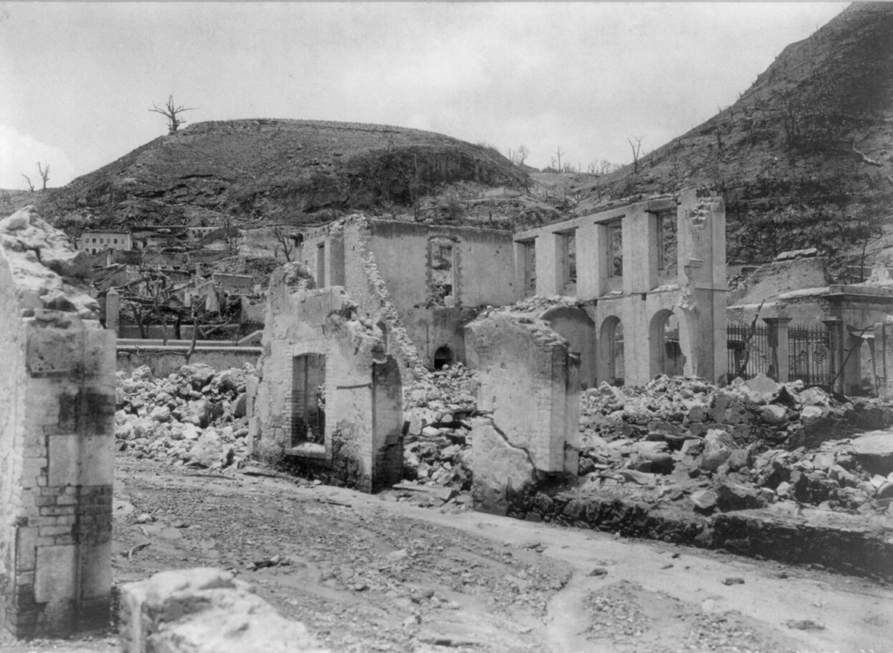
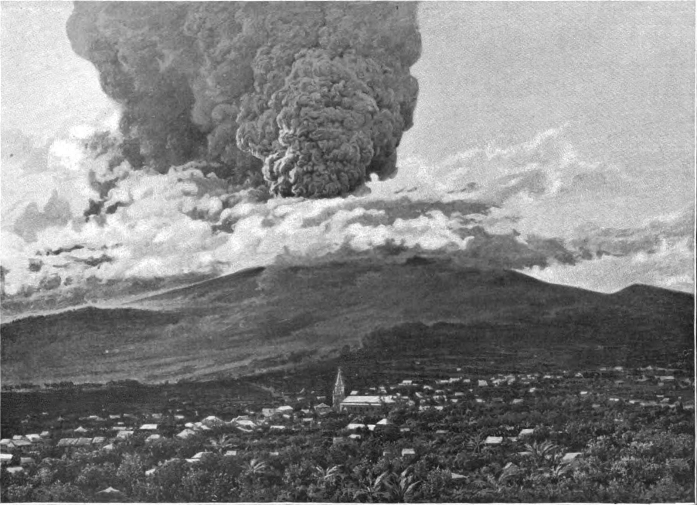
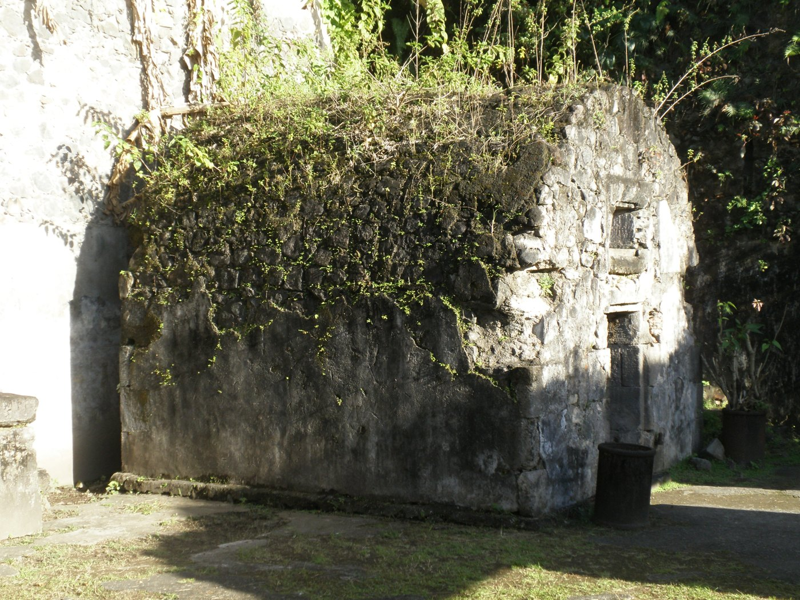

Sans JavaScript, tous les onglets restent visibles à la suite.
Présentation de la séquence
Le 26 avril 1902, un journal décrit la fumée d'un volcan « éteint ». Le 7 mai, il parle d'« affolement ». Le 8 mai, Saint-Pierre est détruite. Après, les récits se multiplient : témoins, journaux, reportages, images, rumeurs et démentis. Lesquels croire, et comment les vérifier ?
Problématique
Comment un même événement devient-il plusieurs récits, et comment savoir à quoi se fier ?
Programme et cadre
- Niveau : seconde professionnelle, français. Repère pour les élèves allophones : B1 avec accompagnement, lexiques et version dys.
- Programme : arrêté du 3 avril 2019, BO spécial n° 5 du 11 avril 2019 ; objet d'étude « S'informer, informer : les circuits de l'information ».
- Corpus : groupement de textes et de documents autour d'une information passée dépassant l'anecdote, conformément au programme. La catastrophe de 1902 est le fil commun ; les supports et les époques se confrontent.
- Durée : dix séances de 52 minutes, environ quatre semaines. Lecture de textes courts à la maison ; aucun achat nécessaire.
- Projet : écrire une brève, puis un article vérifié pour un site de lycée fictif. Aucune publication ni prise de contact n'est demandée.
Objectifs et directives
1. Lire et confronter
« Apprendre à questionner : vérifier les sources, croiser les points de vue, appréhender le processus de construction de l'information. »
La note du 26 avril, Les Colonies et Jean Hess, une lettre privée, L'Opinion, Le Tour du monde et une notice actuelle : les élèves identifient auteur, date, destinataires, faits et jugement.
2. Écrire et reprendre
« Produire et diffuser de l'information de manière responsable. »
Chapeau (2), deux légendes (5), brève de mi-parcours (6), réponse à une fausse alerte (8), brève relue par un pair (9), article et sources (10). Les textes restent en classe : aucune publication réelle sans accord.
3. Décoder les supports
« L'analyse de l'information : validité des sources ; fait/opinion ; citation ; mise en récit ; rumeur ; infox ; format ; texte/image/son… »
Photographie et gravure (5), témoignage téléphonique lu à deux voix (6), publication virale fictive (8). Un prolongement sonore ou vidéo officiel est proposé au CDI, sans imposer un compte ni une plateforme.
4. Étudier la langue
« l'objet d'étude est propice à une étude du système énonciatif, des modalisations et de la parole rapportée »
Une leçon, des exercices, un contrôle noté de 5 à 6 minutes avec son barème et sa grille d'autocorrection à chaque séance ordinaire ; partie langue séparée /10 aux deux évaluations ; Projet Voltaire.
5. Construire sa responsabilité
« les élèves prennent la mesure de leurs nouvelles responsabilités (authenticité, rigueur et pertinence des énoncés, respect d'autrui et protection de leur vie privée) »
Pas de données personnelles, pas d'images de victimes, pas de rumeur sur un camarade ; les sources sont citées, les mots de 1902 contextualisés et les fausses alertes signalées comme fictives.
Citations : programme de français de seconde professionnelle, objet d'étude « S'informer, informer : les circuits de l'information », 2019.
Le corpus et son mode d'emploi
- Textes 1 à 6 : notes et chroniques des Colonies de Saint-Pierre (26 avril au 7 mai), une lettre privée et le regard rétrospectif de Jean Hess.
- Textes 7 à 9 : témoignage téléphonique, L'Opinion de Fort-de-France, le prisonnier miraculé.
- Textes 10 et 11 : notice de synthèse actuelle et récit du Tour du monde en 1902.
- Documents A à C et E : photographie des ruines, gravure d'après photo, cachot aujourd'hui, publication virale fictive.
- Précaution documentaire : les articles anciens sont reproduits d'après les transcriptions de Wikisource et, pour Les Colonies et L'Opinion, d'après les citations de Hess. Ce sont des documents de seconde main : on le dit aux élèves, sans les faire passer pour des fac-similés vus sur Gallica. Les coupes sont signalées ; la ponctuation est modernisée.
Complément au CDI : ouvrir Gallica et chercher les quotidiens des 10 au 15 mai 1902 (par exemple Le Petit Parisien et Le Temps) pour comparer titres et premières pages. L'accès aux fac-similés a été refusé lors de la préparation ; les exercices obligatoires ne dépendent donc pas de cet accès.
Repères historiques sans jugement rétrospectif facile
La Martinique est en 1902 une colonie française ; elle est un département depuis 1946. Saint-Pierre est alors le grand centre commercial de l'île. Les communications passent notamment par le téléphone, les navires et le câble télégraphique. Le danger précis des nuées ardentes est encore mal connu. Le premier tour des législatives a lieu le 27 avril ; le second est prévu le 11 mai : la campagne contribue au contexte, sans suffire à expliquer à elle seule la catastrophe. On distingue les faits établis des accusations des contemporains. Aucun débat sur les partis ou les croyances d'aujourd'hui n'est requis.
La spirale de Gorse
Six tours, en séances 1, 2, 3, 4, 7 et 8 : de la provenance d'une nouvelle à la responsabilité de celui qui la raconte. La question est à l'extérieur, la réponse à l'intérieur ; la pointe reste un problème à discuter dans le bilan final.
- 1D'où vient ce que je sais ?D'un témoin, puis d'une chaîne de personnes ou de médias ; je cherche la source de départ.
- 2Qu'est-ce qu'une information ?Un fait nouveau, daté, situé, attribué à une source, distinct de ce qu'on en pense.
- 3Pourquoi deux journaux racontent-ils autrement le même fait ?Le moment, le lieu, les lecteurs et l'intention changent ; les faits choisis et les mots aussi.
- 4Un fait peut-il mentir ?On peut choisir des faits exacts et en tirer une conclusion fausse : je distingue observation et interprétation.
- 5Pourquoi croit-on une rumeur ?Parce qu'elle nous touche ou nous arrange ; mais un démenti peut aussi se tromper : je vérifie les preuves des deux.
- 6À qui faire confiance aujourd'hui ?À une source identifiable, compétente, datée, qui donne ses preuves ; je la croise avec une autre source indépendante.
À la pointe. Vérifier suffit-il ? Il faut aussi choisir des mots, un titre, une image et des sources : ces choix orientent le lecteur. Informer de manière responsable, c'est rendre ses choix et ses incertitudes visibles, pas prétendre n'avoir aucun point de vue.
Les séances
| Séance | Titre | Support | Langue |
|---|---|---|---|
| 1 | D'où vient une information ? Diagnostic | chaîne de transmission | Phrase verbale et phrase nominale : les titres |
| 2 | La première note : lire une information, 26 avril 1902 | Les Colonies, 26 avril | Voix active, voix passive, tournure impersonnelle |
| 3 | Deux journaux, deux récits : la panique du 7 mai | Les Colonies, 7 mai ; Jean Hess | Rapporter les paroles : citer, verbes de déclaration |
| 4 | Fait, interprétation, opinion : la lettre du 6 mai | lettre du 6 mai ; chronique du 30 avril | Les marques de l'opinion : dénotation et connotation |
| 5 | L'image de presse : montrer, redessiner, légender | photographie et gravure | Les temps de l'information : présent, passé composé, imparfait |
| 6 | Évaluation de mi-parcours : le dernier appel | témoignage téléphonique (11 mai) | Partie langue de la mi-parcours (/10) |
| 7 | Rumeur et infox : le prisonnier miraculé | le prisonnier de Saint-Pierre | Le conditionnel du journaliste |
| 8 | Les sources aujourd'hui : l'observatoire, l'encyclopédie, la publication virale | notice, site scientifique, publication fictive | Présenter une source : la proposition subordonnée relative |
| 9 | Écrire une brève vérifiée | textes 7 et 8 | L'accord du participe passé |
| 10 | Évaluation finale : un article et ses sources | Le Tour du monde ; notice ; photographie | Partie langue finale (/10) |
Contrat de travail
- Je cite mes sources et je distingue ce que je sais, ce qu'on me rapporte et ce que je suppose.
- Je ne répète aucune rumeur sur une personne de la classe ; un exemple inventé est toujours accepté.
- Je ne cherche ni ne montre de photographies de victimes.
- Je peux travailler sur la description écrite d'une image si la projection me gêne.
- Je garde brouillons, grilles, corrections et diagnostic dans une pochette : les progrès comptent.
- Je vérifie avant de partager. Les productions restent en classe.
Les évaluations
| Quand | Épreuve | Barème |
|---|---|---|
| 1 | Diagnostic écrit | non noté |
| 1 à 5, 7 à 9 | Contrôle de langue, 5 à 6 minutes | /5, barème et grille |
| 6 | Lecture et brève | /20 et langue séparée /10 |
| 7 | Savoir prendre une correction | /5 |
| 9 | Brève relue par un camarade | formatif |
| 10 | Article et sources | /20 et langue séparée /10 |
Ce qui est repris, ce qui change
Cette séquence remplace pédagogiquement l'ancien support « S'informer, informer : les circuits de l'information » (ancien format, cinq séances). Elle en garde les questions de référence, le chapeau, les verbes de déclaration, la voix passive, la connotation, le conditionnel et la brève finale. Elle corrige deux raccourcis : une voix passive n'est pas une preuve d'objectivité, et l'indicatif ne garantit pas la vérité. Le faux sujet attribué à une agence n'est pas repris ; les textes fictifs sont identifiés. L'exercice de classement « fait ou opinion » d'un autre niveau n'est pas copié : ici, on reconstruit le raisonnement d'une lettre de 1902.
Mise en ligne : cette page remplace l'ancien support sur l'accueil, la liste du lycée professionnel et le catalogue des thèmes.
Téléchargements
Fiche professeur
PDF · Word · LibreOffice
Fiches élèves, une activité par page
PDF · Word · LibreOffice
Fiches élèves en gros caractères
PDF · Word · LibreOffice
Version dys
PDF · Word · LibreOffice
Évaluations : sujets élèves
PDF · Word · LibreOffice
Corrigés et grilles (professeur)
PDF · Word · LibreOffice
Savoir prendre une correction et autocorrection
PDF · Word · LibreOffice
Textes et documents
PDF · Word · LibreOffice
Crédits et sources
En-tête : « Saint Pierre and Mount Pelee », Sapakagadewmoinjadiw, 2021, CC BY-SA 4.0, Wikimedia Commons (recadrage). Document A : ruines de Saint-Pierre, 1902, Library of Congress, domaine public. Document B : gravure d'après une photographie, Le Tour du monde, 12 septembre 1903, domaine public, via Wikimedia Commons. Document C : cachot de Saint-Pierre, Thérèse Gaigé, 2011, CC0. Textes de 1902 : domaine public. Notice et publication fictive : écrites pour la classe.
Jean Hess, Wikisource ; Le Tour du monde, Wikisource ; Observatoire volcanologique et sismologique de Martinique (IPGP).
© 2026 Madame Carole Paoli Pompougnac · CC BY-NC-SA 4.0
Fiches élèves en PDF Word LibreOffice
Séance 1. D'où vient une information ? Diagnostic
Durée : 52 minutes. Compétences : LectureÉcritureOralLangue
Objectifs : se représenter le chemin d'une information, du témoin au lecteur ; faire un diagnostic de l'écrit et de la langue, non noté ; découvrir le fait de la séquence, la montagne Pelée en 1902 ; entrer dans la spirale de Gorse ; distinguer phrase verbale et phrase nominale dans les titres.
Matériel : fiche élève 1 ; une enveloppe par binôme avec six étiquettes ; l'image d'en-tête (Saint-Pierre aujourd'hui) projetée ; la carte de la Martinique au tableau (Saint-Pierre au nord-ouest, Fort-de-France au sud).
Déroulé minute par minute
| Minutes | Ce qui se passe | Ce que dit ou fait le professeur |
|---|---|---|
| 0 à 4 | Rituel d'entrée. Accueil à la porte, installation, date et titre dans le cahier. Au tableau, la phrase du jour : « Il paraît que... » : qui parle, quand on dit cela ? | Je dis la phrase comme une rumeur de couloir, puis je demande : « Qui a vu ? Qui a entendu ? Qui répète ? » |
| 4 à 14 | Activité 1. La chaîne de l'information : les binômes rangent six étiquettes, du fait au lecteur, puis comparent leurs chaînes. | « Une information ne tombe pas du ciel : quelqu'un a vu, quelqu'un a transmis, quelqu'un a écrit. » |
| 14 à 17 | Spirale de Gorse, tour 1 : « D'où vient ce que je sais ? » Réponses au tableau, puis réponse commune notée. | « Nous partons d'une question large ; tour après tour, elle va se resserrer. » |
| 17 à 30 | Activité 2. Diagnostic écrit (8 à 10 lignes), non noté : raconter comment une nouvelle est arrivée jusqu'à moi. | « Je ne note pas aujourd'hui : je regarde votre écriture pour construire la suite. » |
| 30 à 43 | Étude de la langue. Phrase verbale et phrase nominale : les titres de presse. Leçon, exercices corrigés, contrôle noté /5 (5 minutes), grille. | « “Le volcan se réveille” ou “Réveil du volcan” : même fait, deux phrases. » |
| 43 à 46 | Projet Voltaire (3 minutes) : les homophones a / à dans les titres. Sans connexion : l'exercice papier de la fiche. | « Trois minutes, une règle, puis vous corrigez votre propre phrase du jour. » |
| 46 à 49 | Présentation du fait : Saint-Pierre, 1902, en trois phrases ; trace écrite. | Je montre l'image d'en-tête : « Cette ville a été détruite en 1902. Comment l'a-t-on su ? C'est notre enquête. » |
| 49 à 52 | Rituel de sortie. Billet de sortie : « Une information que j'ai reçue cette semaine : je l'ai apprise par ... ; je sais / je ne sais pas qui l'a vue en premier. » ; devoir noté dans l'agenda. | Je ramasse les billets à la porte ; je vérifie que le devoir est noté. J'ouvrirai la séance suivante par une réponse d'élève. |
Activité 1. La chaîne de l'information LectureOral
Pour l'enseignant. Distribuer les enveloppes. Il n'y a pas une seule bonne chaîne : accepter toute chaîne justifiée. Faire remarquer qu'à chaque maillon l'information peut être déformée, coupée, ou vérifiée. Ne rien dire encore de la montagne Pelée.
Pour les élèves.
Range les six étiquettes dans l'ordre, du fait jusqu'au lecteur. Explique ton choix.
- un habitant voit une fumée sortir du volcan
- un employé du téléphone appelle la ville voisine
- le journal de la ville publie une note
- une dépêche part par le câble sous la mer
- un journal de Paris publie un article
- un lecteur raconte la nouvelle à sa famille
| Ordre | Étiquette | Ce qui peut changer à ce moment-là |
|---|---|---|
| 1 | ||
| 2 | ||
| 3 | ||
| 4 | ||
| 5 | ||
| 6 |
À quel maillon peut-on vérifier l'information ? À quel maillon peut-elle se déformer ?
Corrigé (prof)
Chaîne attendue : l'habitant (témoin) ; le téléphone ou le journal local ; la dépêche par le câble ; le journal de Paris ; le lecteur. Variante acceptée : le journal local avant le téléphone. À chaque maillon, on peut couper, résumer, exagérer, se tromper, mais aussi vérifier (le journaliste qui va voir, qui interroge un second témoin). Plus la chaîne est longue, plus il faut connaître la source de départ.
Activité 2. Écrit diagnostique : comment une nouvelle est arrivée jusqu'à moi Écriture
Pour les élèves.
Écris 8 à 10 lignes. Raconte comment une nouvelle est arrivée jusqu'à toi : une nouvelle du lycée, du sport, de ta ville, ou une nouvelle inventée. Dis par qui ou par quoi tu l'as apprise, et si elle était vraie.
Règles : aucune information personnelle sur quelqu'un ; tu peux inventer.
Corrigé (prof)
Non noté. Grille de diagnostic (professeur) : l'élève nomme-t-il une source (personne, média, réseau) ? Distingue-t-il ce qu'il a vu et ce qu'on lui a dit ? Se pose-t-il la question du vrai ? Langue à suivre : accords sujet-verbe, temps du récit (passé composé et imparfait), ponctuation. Conserver la copie : elle sera rendue en séance 10.
Étude de la langue · Phrase verbale et phrase nominale : les titres Langue
Pour les élèves. Étude de la langue.
La leçon
Une phrase verbale est construite autour d'un verbe conjugué : « Le volcan se réveille. » Une phrase nominale n'a pas de verbe conjugué ; elle est construite autour d'un nom : « Réveil du volcan. »
- Les titres de presse aiment la phrase nominale : elle est courte et frappe l'œil.
- La phrase verbale dit davantage : qui fait quoi, et à quel temps.
- Pour transformer, on cherche le nom de la famille du verbe : se réveiller, le réveil ; détruire, la destruction ; fuir, la fuite.
Je m'entraîne
Transforme en phrase nominale.
- La fumée inquiète les habitants.
- Les curieux montent au cratère.
- La ville est détruite.
Transforme en phrase verbale.
- Panique à Saint-Pierre.
- Excursion à la montagne Pelée dimanche.
Contrôle de langue noté (5 minutes, /5)
- Phrase verbale ou nominale ? « La fumée de la Montagne Pelée »
- Phrase verbale ou nominale ? « L'émigration continue »
- Transforme en phrase nominale : « Le volcan se réveille. »
- Transforme en phrase nominale : « Les habitants fuient. »
- Transforme en phrase verbale : « Arrivée des secours à Fort-de-France. »
Grille d'autocorrection
| Je sais... | Oui | Pas encore |
|---|---|---|
| reconnaître un verbe conjugué | □ | □ |
| distinguer phrase verbale et phrase nominale | □ | □ |
| trouver le nom de la famille d'un verbe | □ | □ |
| écrire un titre court | □ | □ |
Si je coche « pas encore », je fabrique une carte mémoire de la règle pour la séance suivante.
Corrigé (prof)
Corrigé des exercices.
1. Inquiétude des habitants devant la fumée. 2. Montée des curieux au cratère. 3. Destruction de la ville. 4. Les habitants de Saint-Pierre paniquent (ou : La panique gagne Saint-Pierre). 5. Une excursion à la montagne Pelée aura lieu dimanche.
Contrôle : corrigé et barème (/5).
1. nominale · 2. verbale (« continue ») · 3. Réveil du volcan · 4. Fuite des habitants · 5. Les secours arrivent à Fort-de-France. Un point par item ; 0,5 si la phrase est juste mais mal orthographiée.
Trace écrite
À copier dans le cahier.
Ce que je retiens. Une information va d'un témoin à un lecteur par une chaîne : témoin, journal, dépêche, autre journal, lecteur. À chaque maillon, elle peut être vérifiée ou déformée. Pour la juger, je cherche sa source : qui a vu, qui a écrit, quand. Notre enquête : le 8 mai 1902, la ville de Saint-Pierre, en Martinique, est détruite par une éruption de la montagne Pelée. Comment l'a-t-on su, et raconté ?
Pour la prochaine fois
Travail à la maison.
Note dans ton cahier trois titres de presse de la semaine (papier, site, radio, télévision) : recopie-les, dis s'ils sont verbaux ou nominaux, et d'où ils viennent (nom du média, date).
Tempête émotionnelle
Le sujet de la séquence est une catastrophe : on l'annonce sobrement, sans image de victimes. L'écrit diagnostique ne demande aucune confidence : une nouvelle inventée suffit. Un élève touché par une catastrophe naturelle ou un deuil peut le dire au professeur en privé ; il est prévenu à l'avance du contenu des séances.
Sorties de secours (plan B)
- Plan B, huit minutes : la chaîne faite au tableau avec la classe (3 min), deux titres transformés (2 min), billet de sortie (3 min).
- Pas d'enveloppes : les étiquettes sont sur la fiche ; on les numérote.
- Pas de vidéoprojecteur : le professeur dessine la carte de la Martinique au tableau.
- Plus de temps : chaque binôme invente deux titres, l'un nominal, l'autre verbal, pour la même nouvelle du lycée.
Séance 1 · Version dys
Numérote les étiquettes, du fait au lecteur.
- un habitant voit la fumée
- le journal de la ville publie une note
- un journal de Paris publie un article
- un lecteur raconte la nouvelle
Écris trois phrases : comment j'ai appris une nouvelle.
Langue. Entoure le titre sans verbe : « Le volcan fume. » / « Fumée sur le volcan. »
© 2026 Madame Carole Paoli Pompougnac · CC BY-NC-SA 4.0
Fiches élèves en PDF Word LibreOffice
Séance 2. La première note : lire une information, 26 avril 1902
Durée : 52 minutes. Compétences : LectureÉcritureLangue
Objectifs : lire une brève de presse ancienne ; répondre aux questions de référence (qui, quoi, où, quand, comment, pourquoi) ; repérer ce qui est vu, ce qui est rapporté, ce qui est supposé ; rédiger un chapeau ; employer la voix passive et la tournure impersonnelle.
Matériel : texte 1 (Les Colonies, 26 avril 1902) ; fiche élève 2 ; la spirale de Gorse projetée.
Déroulé minute par minute
| Minutes | Ce qui se passe | Ce que dit ou fait le professeur |
|---|---|---|
| 0 à 4 | Rituel d'entrée. Accueil à la porte, installation, date et titre dans le cahier. Au tableau, la phrase du jour : « Depuis cette nuit, une fumée blanche très épaisse se dégage du cratère. » (Les Colonies, 26 avril 1902) | Je lis la phrase : « Est-ce un fait ? Comment le journaliste le sait-il ? » |
| 4 à 18 | Activité 1. Lecture du texte 1 par le professeur, puis questions de référence et repérage des sources (« paraît-il »). | « Une brève répond vite à six questions. Cherchez aussi ce que le journaliste n'a pas vu lui-même. » |
| 18 à 27 | Activité 2. Rédiger un chapeau : deux à trois phrases qui résument l'essentiel, au présent. | « Le chapeau, c'est le texte en gras sous le titre : le lecteur pressé ne lit que lui. » |
| 27 à 30 | Spirale de Gorse, tour 2 : « Qu'est-ce qu'une information ? » | « Un fait nouveau, oui ; mais encore ? Daté ? Situé ? Sourcé ? » |
| 30 à 43 | Étude de la langue. Voix active, voix passive, tournure impersonnelle. Leçon, exercices, contrôle noté /5 (5 minutes), grille. | « “Sont lancées les matières solides” : par qui ? Le journal ne le dit pas. » |
| 43 à 46 | Projet Voltaire (3 minutes) : le participe passé à la voix passive (est lancée, sont lancées). Sans connexion : l'exercice papier de la fiche. | « Trois minutes, une règle, puis vous corrigez votre propre phrase du jour. » |
| 46 à 49 | Trace écrite. | Lecture de la trace par un élève. |
| 49 à 52 | Rituel de sortie. Billet de sortie : « Dans la note du 26 avril, ce qui est vu : ... ; ce qui est seulement rapporté : ... » ; devoir noté dans l'agenda. | Je ramasse les billets à la porte ; je vérifie que le devoir est noté. J'ouvrirai la séance suivante par une réponse d'élève. |
Activité 1. Une brève de 1902 : qui, quoi, où, quand ? Lecture
Pour les élèves.
Lis le texte 1.
Texte 1 · Les Colonies (Saint-Pierre), 26 avril 1902 : « La fumée de la Montagne Pelée »
La première note publiée sur le réveil du volcan, dans le quotidien de Saint-Pierre, douze jours avant la catastrophe.
- 1 Depuis quelques semaines, les habitants du quartier du Prêcheur sont constamment incommodés par une forte et désagréable odeur de soufre, qui se dégage du cratère du volcan éteint.
- 2 L'odeur est si forte parfois, que les chevaux passant sur le grand chemin du littoral hésitent.
- 3 Depuis cette nuit, une fumée blanche très épaisse se dégage du cratère.
- 4 Elle attire de tous côtés des groupes de curieux.
- 5 Dans les hauteurs de la pointe Lamarre, le sol est couvert d'une cendre épaisse.
- 6 De temps en temps, la fumée s'arrête pour être ensuite vomie par masses énormes.
- 7 C'est sans doute alors que sont lancées les matières solides que l'on aperçoit, paraît-il, avec la lunette de la Chambre de commerce.
- 8 Sommes-nous à la veille d'un tremblement de terre ? d'une catastrophe ? se demandent quelques personnes avec anxiété.
- 9 Le temps est couvert, lourd ; on respire difficilement, et, pourtant, à midi, la température ne dépasse pas 28 degrés.
Texte du domaine public, cité par Jean Hess, La Catastrophe de la Martinique. Notes d'un reporter, Paris, Charpentier et Fasquelle, 1902, Wikisource. Orthographe et ponctuation modernisées ; phrases numérotées pour la classe ; [...] signale une coupe.
- incommodé
- gêné
- le cratère
- l'ouverture au sommet du volcan
- la lunette
- l'instrument d'optique qui rapproche les objets lointains
- la Chambre de commerce
- l'organisme qui représente les commerçants de la ville
| Question | Réponse dans le texte | Numéro de phrase |
|---|---|---|
| Qui ? | ||
| Quoi ? | ||
| Où ? | ||
| Quand ? | ||
| Comment ? | ||
| Pourquoi ? |
- Phrase 7 : quel petit mot montre que le journaliste n'a pas vu lui-même les « matières solides » ? Qui les a vues ?
- Phrase 8 : qui se pose la question ? Le journal y répond-il ?
- Classe les phrases 1 à 9 : ce que l'on voit ou sent (fait observé) ; ce que l'on rapporte (on l'a dit au journal) ; ce que l'on suppose.
- Le volcan est dit « éteint » (phrase 1). Que penses-tu de ce mot, douze jours avant la catastrophe ?
Corrigé (prof)
Qui : les habitants du Prêcheur, des curieux. Quoi : une odeur de soufre, puis une fumée blanche épaisse et des cendres. Où : au cratère de la montagne Pelée, au Prêcheur, à la pointe Lamarre. Quand : depuis quelques semaines (odeur), depuis la nuit (fumée) ; note du 26 avril 1902. Comment : la fumée s'arrête puis repart « par masses énormes ». Pourquoi : la note ne l'explique pas.
- « paraît-il » : on a vu ces matières « avec la lunette de la Chambre de commerce » ; le journaliste rapporte ce qu'on lui a dit.
- « quelques personnes » ; le journal ne répond pas : il pose la question et décrit le temps.
- Observé : 1 à 6 et 9. Rapporté : 7 (« paraît-il »). Supposé : 7 (« sans doute ») et 8 (une question).
- Le mot est rassurant et faux : le volcan n'est pas éteint. Le journal emploie l'expression habituelle, sans la vérifier ; un mot peut tromper le lecteur.
Activité 2. Écrire un chapeau Écriture
Pour l'enseignant. Montrer au tableau le chapeau d'un quotidien du jour, choisi sur un sujet sans polémique. Rappeler : présent, phrases complètes, l'essentiel d'abord, pas d'opinion.
Pour les élèves.
Imagine que la note du 26 avril paraisse aujourd'hui sur le site d'un journal. Écris son titre (phrase nominale) et son chapeau : deux ou trois phrases au présent qui répondent à qui, quoi, où, quand.
Je vérifie : □ titre court □ présent □ quatre questions □ aucune opinion □ ce qui est rapporté est signalé (« selon... »).
Corrigé (prof)
Exemple : Fumées et cendres sur la montagne Pelée. Une épaisse fumée blanche s'échappe depuis la nuit du cratère de la montagne Pelée, au nord de la Martinique. Les habitants du Prêcheur, incommodés depuis plusieurs semaines par une forte odeur de soufre, s'inquiètent. Selon des témoins, des matières solides seraient projetées. Barème indicatif (si ramassé) : titre 1, quatre questions 2, présent 1, source signalée 1.
Étude de la langue · Voix active, voix passive, tournure impersonnelle Langue
Pour les élèves. Étude de la langue.
La leçon
- Voix active : le sujet fait l'action. « Le volcan lance des pierres. »
- Voix passive : le sujet subit l'action ; verbe être + participe passé, accordé avec le sujet. « Des pierres sont lancées (par le volcan). » Le complément d'agent (« par... ») peut disparaître : on ne sait plus qui agit.
- Tournure impersonnelle : le sujet « il » ne désigne personne. « Il se dégage une fumée. » « Il faut fuir le fond des vallées. »
- La presse s'en sert pour mettre l'accent sur le fait, ou pour ne pas nommer l'auteur d'une action.
Je m'entraîne
Mets à la voix passive.
- La fumée incommode les habitants.
- Les cendres couvrent le sol.
- Le journal publie une note.
Réécris avec une tournure impersonnelle : « Une odeur de soufre se dégage. »
Contrôle de langue noté (5 minutes, /5)
- Active ou passive ? « Le sol est couvert d'une cendre épaisse. »
- Active ou passive ? « La fumée attire des curieux. »
- Mets à la voix passive : « Les curieux observent le cratère. »
- Accorde : « Des pierres sont (lancé) par le volcan. »
- Réécris avec une tournure impersonnelle : « Fuir le fond des vallées est nécessaire. »
Grille d'autocorrection
| Je sais... | Oui | Pas encore |
|---|---|---|
| reconnaître la voix passive | □ | □ |
| accorder le participe passé avec être | □ | □ |
| repérer le complément d'agent ou son absence | □ | □ |
| employer une tournure impersonnelle | □ | □ |
Si je coche « pas encore », je fabrique une carte mémoire de la règle pour la séance suivante.
Corrigé (prof)
Corrigé des exercices.
1. Les habitants sont incommodés par la fumée. 2. Le sol est couvert par les cendres (ou : de cendres). 3. Une note est publiée par le journal. 4. Il se dégage une odeur de soufre.
Contrôle : corrigé et barème (/5).
1. passive · 2. active · 3. Le cratère est observé par les curieux. · 4. lancées (sujet « des pierres », féminin pluriel) · 5. Il faut fuir le fond des vallées (ou : Il est nécessaire de fuir...). Un point par item.
Trace écrite
À copier dans le cahier.
Ce que je retiens. Une brève répond vite aux questions de référence : qui, quoi, où, quand, comment, pourquoi. Je distingue ce que le journaliste a observé, ce qu'on lui a rapporté (« paraît-il », « selon... ») et ce qu'il suppose (« sans doute »). Le chapeau résume l'essentiel au présent. Le 26 avril 1902, Les Colonies décrivent la fumée, mais appellent encore le volcan « éteint ».
Pour la prochaine fois
Travail à la maison.
Choisis une brève dans un journal de la semaine (papier ou site). Recopie son titre et sa première phrase, puis réponds dans ton cahier à quatre questions de référence.
Tempête émotionnelle
Aucune image de la catastrophe aujourd'hui. Si un élève demande « est-ce que ça peut arriver ici ? », répondre calmement : la séance 8 parlera de la surveillance des volcans aujourd'hui.
Sorties de secours (plan B)
- Plan B, huit minutes : lecture du texte (2 min), tableau qui-quoi-où-quand à l'oral (3 min), billet de sortie (3 min).
- Classe agitée : le chapeau est fait collectivement au tableau, phrase par phrase.
- Plus de temps : écrire le titre de la note en version « réseaux sociaux » et dire ce qu'on perd.
Séance 2 · Version dys
Lis les phrases 1, 3 et 7 du texte 1 avec le professeur.
- Où sort la fumée ? du cratère / de la mer.
- Qui sent l'odeur ? les habitants du Prêcheur / les Parisiens.
- Le mot « paraît-il » veut dire : je l'ai vu / on me l'a dit.
Écris un titre pour cette nouvelle.
Langue. Complète : « Des pierres sont lancé... par le volcan. »
© 2026 Madame Carole Paoli Pompougnac · CC BY-NC-SA 4.0
Fiches élèves en PDF Word LibreOffice
Séance 3. Deux journaux, deux récits : la panique du 7 mai
Durée : 52 minutes. Compétences : LectureOralLangue
Objectifs : comparer deux récits du même fait, l'un écrit avant, l'autre après la catastrophe ; repérer le point de vue de chaque émetteur (moment, lieu, lecteurs) ; analyser un mot qui oriente (« affolement ») ; rapporter les paroles d'autrui : guillemets et verbes de déclaration.
Matériel : textes 5 et 6 ; fiche élève 3 ; surligneurs de deux couleurs.
Déroulé minute par minute
| Minutes | Ce qui se passe | Ce que dit ou fait le professeur |
|---|---|---|
| 0 à 4 | Rituel d'entrée. Accueil à la porte, installation, date et titre dans le cahier. Au tableau, la phrase du jour : « Et le journal appelle cela un “mouvement d'affolement”. » (Jean Hess, 1902) | Je lis la phrase avec l'ironie de Hess : « Qui parle ? De qui parle-t-il ? Est-il d'accord ? » |
| 4 à 18 | Activité 1. Lecture croisée : texte 5 (Les Colonies, 7 mai, Saint-Pierre) et texte 6 (Jean Hess, reporter parisien, après la catastrophe). Tableau de comparaison. | « Même fait : les habitants qui partent. Deux journaux. Qu'est-ce qui change ? » |
| 18 à 28 | Activité 2. Débat réglé par groupes : « Le journal du 7 mai a-t-il menti ? » Chaque groupe prépare deux arguments appuyés sur une phrase numérotée. | « On peut se tromper sans mentir, et dire vrai en choisissant ses mots. Distinguez. » |
| 28 à 31 | Spirale de Gorse, tour 3 : « Pourquoi deux journaux racontent-ils autrement le même fait ? » | « Moment, lieu, lecteurs, intention : notez les quatre mots. » |
| 31 à 44 | Étude de la langue. Rapporter les paroles : citation, guillemets, verbes de déclaration. Leçon, exercices, contrôle noté /5 (5 minutes), grille. | « “Ajoute M. Landes” : voilà un verbe de déclaration. Il y en a des dizaines. » |
| 44 à 47 | Projet Voltaire (3 minutes) : la ponctuation de la citation (deux-points, guillemets). Sans connexion : l'exercice papier de la fiche. | « Trois minutes, une règle, puis vous corrigez votre propre phrase du jour. » |
| 47 à 49 | Trace écrite. | Lecture de la trace. |
| 49 à 52 | Rituel de sortie. Billet de sortie : « Entre le journal du 7 mai et Jean Hess, la différence la plus importante est ..., parce que ... » ; devoir noté dans l'agenda. | Je ramasse les billets à la porte ; je vérifie que le devoir est noté. J'ouvrirai la séance suivante par une réponse d'élève. |
Activité 1. Le même fait, deux récits Lecture
Pour l'enseignant. Faire surligner en jaune les faits (gens qui partent, rivières, poissons morts) et en vert les mots qui jugent (« affolement », « panique », la conclusion de M. Landes, la question de Hess). Rappeler le contexte sans prendre parti : la campagne des élections législatives (second tour le 11 mai), le gouverneur qui veut rassurer, la commission scientifique. Jean Hess accuse l'administration ; le gouvernement a répondu ; les historiens discutent encore la part de chacun.
Pour les élèves.
Lis les textes 5 et 6. Surligne en jaune les faits, en vert les mots qui jugent.
Texte 5 · Les Colonies, 7 mai 1902, dernier numéro : « La panique à Saint-Pierre » et l'avis de M. Landes (extraits)
Gaston Landes, professeur au lycée de Saint-Pierre, est membre de la commission scientifique nommée par le gouverneur. Ce numéro est le dernier : le lendemain, Saint-Pierre est détruite.
- 1 L'émigration de Saint-Pierre continue à se faire de plus en plus intense.
- 2 Du matin jusqu'au soir et toute la nuit ce ne sont que gens pressés portant des paquets, des malles, des enfants et se dirigeant vers le Fonds-Saint-Denis, le Morne-d'Orange, le Carbet, etc.
- 3 Quant aux vapeurs de la Compagnie Girard, ils ne désemplissent pas.
- [...]
- 4 Il résulte des observations de M. Landes que, dans la matinée d'hier, la bouche centrale du volcan située aux fentes supérieures vomissait plus que jamais, mais par intermittence, des matières pulvérulentes jaunes et noires.
- 5 Il faut fuir le fond des vallées avoisinantes et habiter à une certaine hauteur pour éviter d'être submergé comme le furent Herculanum et Pompéi.
- 6 Le Vésuve, ajoute M. Landes, n'a jamais fait que de rares victimes.
- 7 Conclusion : la Montagne Pelée n'offre pas plus de danger pour les habitants de Saint-Pierre que le Vésuve pour ceux de Naples.
Texte du domaine public, cité par Jean Hess, La Catastrophe de la Martinique. Notes d'un reporter, Paris, Charpentier et Fasquelle, 1902, Wikisource. Orthographe et ponctuation modernisées ; phrases numérotées pour la classe ; [...] signale une coupe.
- l'émigration
- ici, le départ des habitants
- les vapeurs
- les bateaux à vapeur
- pulvérulent
- en poudre
- Herculanum et Pompéi
- villes romaines détruites par le Vésuve en 79
Texte 6 · Jean Hess relit Les Colonies (1902, extraits)
Jean Hess, reporter du quotidien parisien Le Journal, arrive en Martinique après la catastrophe et enquête. Son livre paraît la même année.
- 1 Je lis dans le dernier numéro des Colonies, celui du 7 : « La panique à Saint-Pierre. »
- 2 Et le journal appelle cela un « mouvement d'affolement ».
- [...]
- 3 Le 6, vers 7 heures, le débit de la Rivière des Pères augmenta.
- 4 La rivière roulait une eau noirâtre.
- [...]
- 5 Les eaux charrient de la cendre.
- 6 À l'embouchure de la rivière flottent des poissons morts.
- 7 Est-ce qu'il n'était point normal que de tels phénomènes donnassent de la « panique » ?
Texte du domaine public, cité par Jean Hess, La Catastrophe de la Martinique. Notes d'un reporter, Paris, Charpentier et Fasquelle, 1902, Wikisource. Orthographe et ponctuation modernisées ; phrases numérotées pour la classe ; [...] signale une coupe.
- le débit
- la quantité d'eau qui passe
- charrier
- emporter avec soi
- l'embouchure
- l'endroit où la rivière se jette dans la mer
| Texte 5 · Les Colonies | Texte 6 · Jean Hess | |
|---|---|---|
| Qui écrit ? Où ? | ||
| Quand ? Avant ou après le 8 mai ? | ||
| Pour quels lecteurs ? | ||
| Le fait raconté | ||
| Un mot qui juge | ||
| Ce que le texte veut que le lecteur pense |
- Texte 5, phrase 7 : reformule la conclusion de M. Landes. Pourquoi rassure-t-elle ?
- Texte 6, phrase 2 : pourquoi Jean Hess met-il « mouvement d'affolement » entre guillemets ?
- Texte 6, phrase 7 : la question de Hess attend-elle une réponse ? Que pense-t-il ?
Corrigé (prof)
Texte 5 : le quotidien de Saint-Pierre, le 7 mai, la veille, pour ses lecteurs de la ville ; fait : l'émigration, les bateaux pleins ; mots qui jugent : « panique » dans le titre, « mouvement d'affolement » dans l'article ; il veut calmer : le danger ne serait pas plus grand qu'à Naples. Texte 6 : un reporter parisien, après la catastrophe, pour les lecteurs de France ; mêmes faits, et d'autres (rivières, cendres, poissons morts) ; il veut montrer que la peur était raisonnable et que le journal s'est trompé.
- La montagne n'est pas plus dangereuse que le Vésuve pour Naples : comparaison avec un volcan connu qui « n'a jamais fait que de rares victimes » ; elle rassure parce qu'elle vient d'un savant de la commission.
- Il cite les mots exacts du journal pour les mettre à distance et s'en moquer : il n'est pas d'accord.
- Non, c'est une question rhétorique : Hess pense que la panique était normale, donc justifiée.
Activité 2. Débat réglé : le journal du 7 mai a-t-il menti ? Oral
Pour l'enseignant. Groupes de quatre : un secrétaire, un porte-parole, un gardien du temps, un chercheur de phrases. Trois minutes de préparation, une minute par porte-parole. Je note les arguments au tableau en deux colonnes. Conclusion attendue : le journal rapporte des faits exacts (les départs) et l'avis d'un savant ; il se trompe dans son jugement ; il n'invente pas. Mentir, c'est dire ce que l'on sait faux.
Pour les élèves.
Préparez deux arguments, chacun avec une phrase numérotée des textes 5 ou 6.
| Notre réponse | Argument | Phrase |
|---|---|---|
| 1. | ||
| 2. |
Mots utiles : se tromper, mentir, minimiser, rassurer, rapporter, citer, une source, un expert.
Corrigé (prof)
« Il n'a pas menti » : il rapporte les départs (texte 5, phrases 1 à 3) et cite un savant (phrases 4 à 7) ; il ne pouvait pas savoir. « Il a minimisé » : il choisit le mot « affolement » (texte 6, phrase 2) et met en avant une conclusion rassurante (texte 5, phrase 7) alors que les faits du 6 mai sont graves (texte 6, phrases 3 à 6). Nuance : se tromper n'est pas mentir ; mais un journal a la responsabilité de ses mots.
Étude de la langue · Rapporter les paroles : citer, verbes de déclaration Langue
Pour les élèves. Étude de la langue.
La leçon
- Citer, c'est reprendre les mots exacts, entre guillemets : « Le Vésuve, ajoute M. Landes, n'a jamais fait que de rares victimes. »
- Le verbe de déclaration dit qui parle, et parfois comment : dire, déclarer, affirmer, ajouter, assurer, reconnaître, démentir, avouer, prétendre.
- Le choix du verbe oriente : « il affirme » (il est sûr), « il prétend » (on doute), « il reconnaît » (il avoue).
- Ponctuation : deux-points et guillemets ; l'incise (« ajoute M. Landes ») se place entre virgules, avec inversion du sujet.
Je m'entraîne
Remplace « dit » par un verbe plus précis.
- Le savant dit que la ville ne risque rien. (il en est sûr)
- Le gouverneur dit qu'il n'a pas été prévenu. (on en doute)
- Le journal dit qu'il s'est trompé. (il l'avoue)
Ponctue : Le journaliste écrit la panique continue
Contrôle de langue noté (5 minutes, /5)
- Recopie le verbe de déclaration : « Le Vésuve, ajoute M. Landes, n'a jamais fait que de rares victimes. »
- Remplace « dit » pour montrer le doute : « Le témoin dit qu'il a tout vu. »
- Remplace « dit » pour montrer l'aveu : « Le directeur dit qu'il a eu peur. »
- Ponctue : Hess demande était-ce anormal
- Place l'incise : « La ville ne risque rien » (assure le savant).
Grille d'autocorrection
| Je sais... | Oui | Pas encore |
|---|---|---|
| mettre une citation entre guillemets | □ | □ |
| choisir un verbe de déclaration précis | □ | □ |
| comprendre ce qu'un verbe de déclaration fait penser | □ | □ |
| placer et ponctuer une incise | □ | □ |
Si je coche « pas encore », je fabrique une carte mémoire de la règle pour la séance suivante.
Corrigé (prof)
Corrigé des exercices.
1. affirme / assure · 2. prétend · 3. reconnaît / admet · 4. Le journaliste écrit : « La panique continue. »
Contrôle : corrigé et barème (/5).
1. ajoute · 2. prétend · 3. reconnaît / avoue · 4. Hess demande : « Était-ce anormal ? » · 5. « La ville, assure le savant, ne risque rien. » Un point par item ; 0,5 si la ponctuation est incomplète.
Trace écrite
À copier dans le cahier.
Ce que je retiens. Le même fait peut donner deux récits différents selon le moment (avant ou après), le lieu, les lecteurs et l'intention de celui qui écrit. Un journal peut rapporter des faits exacts et se tromper dans son jugement ; se tromper n'est pas mentir. Je repère les mots qui jugent (« affolement ») et les verbes de déclaration qui orientent (« prétend »).
Pour la prochaine fois
Travail à la maison.
Lis le texte 4 (la lettre de M. Berte). Souligne en une couleur ce qu'il voit, en une autre ce qu'il en conclut.
Tempête émotionnelle
Le débat porte sur un journal de 1902, pas sur la politique d'aujourd'hui. Si un élève généralise (« les journaux mentent tous »), je reprends : « Lequel ? Quand ? Sur quoi ? Avec quelle preuve ? » C'est l'exercice même de la séance. Je ne donne pas d'avis personnel sur la responsabilité des autorités de 1902 : je présente les versions.
Sorties de secours (plan B)
- Plan B, huit minutes : les deux phrases clés au tableau (texte 5, phrase 7 ; texte 6, phrase 2), une question à l'oral (3 min), billet de sortie (3 min).
- Débat impossible : chaque élève écrit ses deux arguments ; trois lectures à voix haute.
- Plus de temps : réécrire la phrase 7 du texte 5 avec prudence : « Selon M. Landes, la montagne ne serait pas plus dangereuse... »
Séance 3 · Version dys
Lis avec le professeur : texte 5, phrase 7 ; texte 6, phrase 2.
- Le texte 5 est écrit : avant / après la catastrophe.
- Le journal veut : rassurer / faire peur.
- Jean Hess pense que la panique était : normale / ridicule.
Écris une phrase : pourquoi deux journaux racontent autrement le même fait.
Langue. Mets les guillemets : Le savant affirme : la ville ne risque rien.
© 2026 Madame Carole Paoli Pompougnac · CC BY-NC-SA 4.0
Fiches élèves en PDF Word LibreOffice
Séance 4. Fait, interprétation, opinion : la lettre du 6 mai
Durée : 52 minutes. Compétences : LectureÉcritureLangue
Objectifs : distinguer dans un document le fait observé, l'information rapportée, l'interprétation et la décision ; comprendre qu'un raisonnement peut partir de faits exacts et mener à une conclusion fausse ; repérer les marques de l'opinion : mots connotés, adverbes, verbes d'opinion.
Matériel : textes 3 et 4 ; fiche élève 4 ; trois couleurs.
Déroulé minute par minute
| Minutes | Ce qui se passe | Ce que dit ou fait le professeur |
|---|---|---|
| 0 à 4 | Rituel d'entrée. Accueil à la porte, installation, date et titre dans le cahier. Au tableau, la phrase du jour : « Tout bien pesé, je ne crois pas que le moment soit venu de suivre mes concitoyens affolés. » (lettre du 6 mai 1902) | Je lis la phrase : « Il a réfléchi, il a observé. Pourquoi se trompe-t-il ? » |
| 4 à 8 | Retour sur le devoir : ce que M. Berte voit, ce qu'il en conclut. | J'interroge trois élèves, sans corriger encore. |
| 8 à 21 | Activité 1. La lettre de M. Berte en trois couleurs : fait, information rapportée, interprétation et décision. | « Il observe bien. Il raisonne. Il se trompe. Où est la faille ? » |
| 21 à 29 | Activité 2. La chronique du 30 avril : un texte d'opinion qui fait sourire ; repérer le ton et ce qu'il fait penser. | « Une chronique n'est pas une brève : l'auteur a le droit de dire “nous” et de plaisanter. » |
| 29 à 32 | Spirale de Gorse, tour 4 : « Un fait peut-il mentir ? » | « Un fait est vrai ou faux. Mais on choisit les faits, et on les commente. » |
| 32 à 45 | Étude de la langue. Les marques de l'opinion : dénotation et connotation, adverbes, verbes d'opinion. Leçon, exercices, contrôle noté /5 (5 minutes), grille. | « “Mes concitoyens affolés” : le mot “affolés” juge. Quel mot neutre aurait-il pu choisir ? » |
| 45 à 47 | Projet Voltaire (2 minutes) : les adverbes en -ment (évidemment, prudemment). Sans connexion : l'exercice papier de la fiche. | « Deux minutes, une règle, puis vous corrigez votre propre phrase du jour. » |
| 47 à 49 | Trace écrite. | Lecture de la trace. |
| 49 à 52 | Rituel de sortie. Billet de sortie : « Un fait de la lettre : ... ; l'interprétation que M. Berte en tire : ... ; mon avis sur sa décision : ... » ; devoir noté dans l'agenda. | Je ramasse les billets à la porte ; je vérifie que le devoir est noté. J'ouvrirai la séance suivante par une réponse d'élève. |
Activité 1. La lettre de M. Berte : observer, interpréter, décider Lecture
Pour l'enseignant. La lettre est émouvante : on ne sait pas avec certitude ce qu'est devenu M. Berte, et je le dis simplement si on me le demande. L'intérêt est le raisonnement : des observations justes (ciel pur, pas de flammes visibles), une interprétation rassurante (la pluie explique l'odeur), une décision (rester). Ce n'est pas un classement binaire « fait ou opinion » : on suit un raisonnement complet et on voit où il casse.
Pour les élèves.
Lis le texte 4. Colorie : en bleu les faits observés (il voit, il sent, il entend) ; en orange les informations rapportées (on lui dit) ; en rouge les interprétations et la décision.
Texte 4 · Lettre d'un habitant de Saint-Pierre, M. Berte, à son frère, mardi 6 mai 1902, 3 heures du matin (extraits)
Une lettre privée, publiée après la catastrophe par le reporter Jean Hess.
- 1 Joseph vient me réveiller et m'apprend qu'une grande partie de la population s'est transportée sur les boulevards se dirigeant vers le Fonds-Saint-Denis.
- 2 Il paraît que la Rivière des Pères est envahie par une coulée de boue.
- 3 Je perçois distinctement une odeur de bourbier.
- 4 Le ciel est pur cependant.
- 5 Avant de prendre une décision, je fais les constatations suivantes : il a plu dans la nuit, ce qui explique l'odeur infecte qui se dégage de la ville ; les détonations n'ont pas augmenté en intensité ; elles sont plus fréquentes et rappellent le tonnerre.
- 6 Les brouillards de la montagne ont disparu, ce qui me permet de bien observer que le cratère n'a au-dessus de lui ni flammes ni cendres.
- 7 La lumière électrique ne fonctionne pas depuis hier soir, les machines étant engorgées par les cendres.
- 8 Tout bien pesé, je ne crois pas que le moment soit venu de suivre mes concitoyens affolés... et je reste.
Texte du domaine public, cité par Jean Hess, La Catastrophe de la Martinique. Notes d'un reporter, Paris, Charpentier et Fasquelle, 1902, Wikisource. Orthographe et ponctuation modernisées ; phrases numérotées pour la classe ; [...] signale une coupe.
- percevoir
- sentir, remarquer
- un bourbier
- un lieu plein de boue
- engorgé
- bouché
- mes concitoyens
- les habitants de ma ville
| Ce qu'il observe ou apprend | Ce qu'il en conclut |
|---|---|
| Phrase 3 : une odeur de bourbier | |
| Phrase 5 : les détonations | |
| Phrase 6 : le cratère |
- Phrase 2 : quel mot montre que l'information est rapportée ?
- Ses observations sont-elles fausses ? Où est l'erreur de raisonnement ?
- Quel mot de la phrase 8 juge les autres habitants ?
Corrigé (prof)
Bleu : 3, 4, 5 (les détonations), 6, 7. Orange : 1 (Joseph lui apprend), 2 (« il paraît »). Rouge : 5 (« ce qui explique l'odeur »), 8 (la décision). Tableau : l'odeur, la pluie l'explique ; les détonations ne sont pas plus fortes, donc pas d'aggravation ; pas de flammes au-dessus du cratère, donc pas de danger.
- « Il paraît que ».
- Ses observations sont exactes ; l'erreur est d'en tirer une conclusion trop sûre : ce qu'il ne voit pas n'est pas forcément absent. Il lui manque une source savante, et la prudence.
- « affolés » : un mot connoté péjoratif, qui fait de la prudence une faiblesse.
Activité 2. Une chronique qui fait sourire : le 30 avril LectureÉcriture
Pour les élèves.
Texte 3 · Les Colonies, 30 avril 1902 : une chronique non signée (extraits)
Une chronique est un article d'opinion, souvent plein d'humour. Le premier tour des élections législatives a eu lieu le 27 avril ; le second est prévu le 11 mai.
- 1 Pour nous, insulaires de la Martinique, avril, s'il n'a pas été comique, aura été tragique, doublement tragique.
- 2 Nous y aurons vu deux éruptions volcaniques, l'une dans les esprits, l'autre à la Montagne Pelée ; l'une électorale, l'autre physique ; l'une de discours, de propagande, de rhum, d'argent et de bulletins de vote, l'autre de fumée et de cendres.
- [...]
- 3 Aussi quelle n'a pas été notre surprise quand on vint nous dire que la Montagne Pelée fumait !
- 4 Nous prîmes tout d'abord la chose pour un poisson d'avril, et nous ne crûmes que quand nous eûmes vu.
- [...]
- 5 Parfait.
- 6 Pourvu que cela s'arrête là et que la montagne se contente de fumer et montrer de la cendre.
- 7 Mais nous ne nous attendons pas à ce mauvais coup de sa part.
Texte du domaine public, cité par Jean Hess, La Catastrophe de la Martinique. Notes d'un reporter, Paris, Charpentier et Fasquelle, 1902, Wikisource. Orthographe et ponctuation modernisées ; phrases numérotées pour la classe ; [...] signale une coupe.
- insulaire
- habitant d'une île
- la propagande
- l'action pour gagner des partisans à une idée ou à un candidat
- un poisson d'avril
- une farce du 1er avril
- Phrase 2 : quelles sont les « deux éruptions » ? Pourquoi ce rapprochement fait-il sourire ?
- Phrase 4 : à quoi l'auteur a-t-il d'abord cru ? Quel est le ton ?
- Phrases 5 à 7 : l'auteur s'inquiète-t-il ? Relève les mots qui le montrent.
- Écris deux phrases : en quoi une chronique est-elle différente d'une brève ?
Corrigé (prof)
- L'éruption « électorale » (la campagne, les discours, les votes) et l'éruption « physique » du volcan ; rapprocher une campagne d'un volcan est une comparaison amusante, une façon de ne pas prendre le volcan au sérieux.
- À un poisson d'avril, une farce ; ton léger, amusé.
- Il espère que cela s'arrêtera (« Pourvu que ») mais ne s'attend pas au pire (« nous ne nous attendons pas à ce mauvais coup ») : une inquiétude légère, aussitôt écartée.
- Une brève rapporte des faits, sans « je » ni avis ; une chronique donne un point de vue personnel, avec humour, et peut employer « nous ».
Étude de la langue · Les marques de l'opinion : dénotation et connotation Langue
Pour les élèves. Étude de la langue.
La leçon
- La dénotation est le sens neutre du mot, celui du dictionnaire : « les habitants partent ».
- La connotation est la valeur positive (méliorative) ou négative (péjorative) qu'on ajoute : « les habitants fuient, affolés » ; « les habitants se mettent prudemment à l'abri ».
- Autres marques de l'opinion : les adverbes (heureusement, évidemment, sans doute), les verbes d'opinion (je crois, je pense), la ponctuation expressive (!, ...).
| Neutre | Péjoratif | Mélioratif |
|---|---|---|
| un départ | une débandade | une évacuation prudente |
| une foule | une cohue | une foule solidaire |
| un journaliste | un gratte-papier | un grand reporter |
Je m'entraîne
Dis si le mot souligné est neutre, péjoratif ou mélioratif.
- les habitants affolés
- les habitants inquiets
- un reportage courageux
Réécris de façon neutre : « Heureusement, ces froussards ont enfin quitté la ville ! »
Contrôle de langue noté (5 minutes, /5)
- Neutre, péjoratif ou mélioratif ? « une cohue »
- Neutre, péjoratif ou mélioratif ? « un départ »
- Relève l'adverbe qui donne une opinion : « Évidemment, le volcan ne risque rien. »
- Relève le verbe d'opinion : « Je crois que le moment n'est pas venu. »
- Réécris de façon neutre : « Ces pauvres fous fuient la ville ! »
Grille d'autocorrection
| Je sais... | Oui | Pas encore |
|---|---|---|
| distinguer dénotation et connotation | □ | □ |
| reconnaître un mot péjoratif ou mélioratif | □ | □ |
| repérer un adverbe ou un verbe d'opinion | □ | □ |
| réécrire une phrase de façon neutre | □ | □ |
Si je coche « pas encore », je fabrique une carte mémoire de la règle pour la séance suivante.
Corrigé (prof)
Corrigé des exercices.
1. péjoratif · 2. neutre (« légèrement négatif » accepté) · 3. mélioratif · 4. Des habitants ont quitté la ville.
Contrôle : corrigé et barème (/5).
1. péjoratif · 2. neutre · 3. évidemment · 4. je crois · 5. Des habitants quittent la ville. Un point par item.
Trace écrite
À copier dans le cahier.
Ce que je retiens. Dans un document, je distingue le fait observé, l'information rapportée (« il paraît »), l'interprétation et l'opinion. Des faits exacts peuvent mener à une conclusion fausse : il faut se demander ce que l'on ne voit pas. Les mots connotés, les adverbes et les verbes d'opinion montrent le point de vue de celui qui écrit.
Pour la prochaine fois
Travail à la maison.
Lis le texte 7 (le dernier appel). Prépare une question que tu poserais au directeur des téléphones si tu étais journaliste.
Tempête émotionnelle
La lettre est celle d'un homme qui a probablement péri : on ne la commente pas comme une faute personnelle. On ne juge pas M. Berte ; on comprend son raisonnement. Si un élève dit « moi aussi je serais resté », c'est une réaction légitime : la séance porte sur la difficulté de décider avec des informations incomplètes.
Sorties de secours (plan B)
- Plan B, huit minutes : phrases 6 et 8 du texte 4 au tableau ; fait ou conclusion ? (4 min) ; billet de sortie (4 min).
- Pas de couleurs : souligner, encadrer, entourer.
- Plus de temps : écrire la réponse qu'un savant prudent aurait pu faire à M. Berte, avec deux verbes d'opinion.
Séance 4 · Version dys
Lis avec le professeur les phrases 4, 6 et 8 du texte 4.
- « Le ciel est pur » est : un fait / une opinion.
- « Je ne crois pas que le moment soit venu » est : un fait / une opinion.
- Le mot « affolés » est : neutre / négatif.
Écris la phrase de façon neutre : « Ces froussards quittent la ville. »
© 2026 Madame Carole Paoli Pompougnac · CC BY-NC-SA 4.0
Fiches élèves en PDF Word LibreOffice
Séance 5. L'image de presse : montrer, redessiner, légender
Durée : 52 minutes. Compétences : LectureÉcritureOralLangue
Objectifs : lire deux images de presse de nature différente, une photographie et une gravure faite d'après une photographie ; comprendre le rôle de la légende ; écrire une légende informative et la comparer à une légende sensationnelle ; employer les temps de l'information : présent, passé composé, imparfait.
Matériel : documents A et B projetés et imprimés ; fiche élève 5.
Déroulé minute par minute
| Minutes | Ce qui se passe | Ce que dit ou fait le professeur |
|---|---|---|
| 0 à 4 | Rituel d'entrée. Accueil à la porte, installation, date et titre dans le cahier. Au tableau, la phrase du jour : « Une image vaut mille mots » : est-ce vrai pour une information ? | J'écris la phrase ; deux élèves répondent par « oui, parce que » ou « non, parce que ». |
| 4 à 8 | Observation silencieuse des documents A et B : trente secondes chacun, puis trois mots par élève. | « Ne jugez pas encore : décrivez. » |
| 8 à 22 | Activité 1. Deux images, deux façons de montrer : tableau de lecture (nature, premier plan, ce qui est absent, effet, ce que l'image prouve). | « La photo enregistre ; la gravure redessine. Qu'est-ce que le graveur peut changer ? » |
| 22 à 34 | Activité 2. Écrire deux légendes pour le document A : une légende informative, une légende « choc » ; échange oral sur l'effet. | « Même image, deux légendes : le lecteur ne verra pas la même chose. » |
| 34 à 47 | Étude de la langue. Les temps de l'information : présent, passé composé, imparfait. Leçon, exercices, contrôle noté /5 (5 minutes), grille. | « Une légende est au présent ; une brève raconte au passé composé ; l'imparfait décrit le décor. » |
| 47 à 49 | Projet Voltaire (2 minutes) : le participe passé en -é ou l'infinitif en -er. Sans connexion : l'exercice papier de la fiche. | « Deux minutes, une règle, puis vous corrigez votre propre phrase du jour. » |
| 49 à 52 | Rituel de sortie. Billet de sortie : « Une légende honnête doit dire : ... » ; devoir noté dans l'agenda. | Je ramasse les billets à la porte ; je vérifie que le devoir est noté. J'ouvrirai la séance suivante par une réponse d'élève. |
Activité 1. Une photographie et une gravure LectureOral
Pour l'enseignant. Document A : photographie de 1902 des ruines, choisie parce qu'on n'y voit aucune victime. Document B : gravure du Tour du monde (1903), « d'après une photographie », vue d'une éruption depuis le Morne-Rouge. La gravure peut renforcer les contrastes, nettoyer, dramatiser ; elle permettait aussi d'imprimer une photo à une époque où beaucoup de journaux ne le pouvaient pas. Le Morne-Rouge sera détruit par la nuée du 30 août 1902 : je le dis seulement si un élève demande ce qu'est devenu le village.
Pour les élèves.
Document A · Saint-Pierre après le 8 mai 1902, photographie

Document B · Une éruption de la montagne Pelée, gravure, 1903

| Document A | Document B | |
|---|---|---|
| Nature (photo, dessin, gravure) | ||
| Ce qui est au premier plan | ||
| Ce qui est absent | ||
| Le sentiment que l'image donne | ||
| Ce que l'image prouve |
- Quelle image te semble la plus « vraie » ? Pourquoi ?
- Que signifie « d'après une photographie » ? Qu'est-ce que le graveur a pu changer ?
Corrigé (prof)
A : photographie ; murs éventrés, gravats, colline nue ; absents : les habitants, la couleur, le bruit ; sentiment de vide, de silence ; elle prouve la destruction de maisons à un endroit et à un moment. B : gravure ; un village et son clocher sous un énorme nuage ; absents : les détails exacts, les gens ; sentiment de menace et de puissance ; elle montre une éruption, redessinée par une main.
- Réponse libre ; on attend : la photographie enregistre ce qui était devant l'appareil, mais on ne sait pas qui l'a prise ni ce qui est hors du cadre ; la gravure est déjà une interprétation.
- Le graveur a recopié la photographie à la main pour pouvoir l'imprimer : il a pu accentuer le nuage, simplifier, effacer ce qui gêne.
Activité 2. Une image, deux légendes ÉcritureOral
Pour les élèves.
Écris deux légendes pour le document A.
| Légende informative (une ou deux phrases, au présent) | Légende « choc » (pour attirer les clics) |
|---|---|
Une bonne légende informative dit : □ quoi □ où □ quand □ d'où vient l'image. Elle n'ajoute rien que l'image ne montre pas.
Échange : lis ta légende « choc » à ton voisin. Qu'est-ce qu'elle lui fait croire ?
Corrigé (prof)
Informative : « Saint-Pierre (Martinique), après l'éruption de la montagne Pelée du 8 mai 1902 : des maisons de pierre sans toit au milieu des gravats. Photographie conservée à la Bibliothèque du Congrès, à Washington. » Choc : « L'enfer sur terre : la ville où personne n'a survécu ! » ; elle ajoute une affirmation que l'image ne prouve pas, et qui est fausse (il y a eu de rares rescapés) ; elle joue sur l'émotion. Une légende peut tromper autant qu'un texte.
Étude de la langue · Les temps de l'information : présent, passé composé, imparfait Langue
Pour les élèves. Étude de la langue.
La leçon
- Présent : la légende, le titre, le chapeau, et ce qui est encore vrai (« Saint-Pierre est au nord de l'île »).
- Passé composé : l'événement terminé, dans une brève d'aujourd'hui (« Le volcan a détruit la ville »). Auxiliaire avoir ou être + participe passé.
- Imparfait : la description, le décor, l'habitude (« La ville comptait 30 000 habitants »).
- Les récits de 1902 emploient aussi le passé simple (« le débit augmenta ») : c'est le temps du récit écrit.
Je m'entraîne
Conjugue au temps indiqué.
- Saint-Pierre (être) aujourd'hui une petite ville. (présent)
- Le 8 mai 1902, la nuée (détruire) la ville. (passé composé)
- Avant 1902, des tramways (circuler) dans les rues. (imparfait)
Contrôle de langue noté (5 minutes, /5)
- Conjugue au présent : « La photographie (montrer) des ruines. »
- Conjugue au passé composé : « Les habitants (fuir) vers le sud. »
- Conjugue au passé composé : « Les secours (arriver) le soir. »
- Conjugue à l'imparfait : « La ville (compter) 30 000 habitants. »
- Quel temps pour une légende : présent ou passé simple ?
Grille d'autocorrection
| Je sais... | Oui | Pas encore |
|---|---|---|
| choisir le présent pour une légende | □ | □ |
| former le passé composé avec avoir et être | □ | □ |
| accorder le participe avec être | □ | □ |
| employer l'imparfait pour décrire | □ | □ |
Si je coche « pas encore », je fabrique une carte mémoire de la règle pour la séance suivante.
Corrigé (prof)
Corrigé des exercices.
1. est · 2. a détruit · 3. circulaient.
Contrôle : corrigé et barème (/5).
1. montre · 2. ont fui · 3. sont arrivés (auxiliaire être : accord avec « les secours ») · 4. comptait · 5. présent. Un point par item.
Trace écrite
À copier dans le cahier.
Ce que je retiens. Une image de presse n'est pas la réalité : la photographie enregistre ce qui est dans le cadre ; la gravure, dessinée « d'après une photographie », interprète. La légende oriente le regard : une légende honnête dit quoi, où, quand et d'où vient l'image, et n'ajoute rien que l'image ne montre. Dans l'information : présent pour la légende, passé composé pour l'événement, imparfait pour le décor.
Pour la prochaine fois
Travail à la maison.
Révise les séances 1 à 5 pour l'évaluation de mi-parcours : questions de référence, sources, fait et opinion, voix passive, verbes de déclaration, temps de l'information. Relis le texte 7.
Tempête émotionnelle
Aucune photo de victimes n'est montrée dans la séquence. Si un élève en cherche sur son téléphone, je rappelle la règle de la classe : on n'affiche pas d'images de morts. Un élève que les images de catastrophe angoissent travaille sur la description écrite, sans projection.
Sorties de secours (plan B)
- Plan B, huit minutes : document A seul, une légende informative collective (4 min), billet de sortie (4 min).
- Pas de vidéoprojecteur : les documents sont sur la fiche imprimée.
- Plus de temps : chercher une photo de presse du jour et sa légende ; dire si la légende ajoute quelque chose.
Séance 5 · Version dys
Regarde le document A avec le professeur.
- C'est : une photographie / une peinture.
- On voit : des maisons détruites / une fête.
- Une bonne légende dit : où et quand / ce que je ressens.
Écris une légende : « Saint-Pierre, ... »
Langue. Passé composé : « Le volcan (détruire) la ville. »
© 2026 Madame Carole Paoli Pompougnac · CC BY-NC-SA 4.0
Fiches élèves en PDF Word LibreOffice
Séance 6. Évaluation de mi-parcours : le dernier appel
Durée : 52 minutes. Compétences : LectureÉcritureLangue
Objectifs : évaluer la lecture d'un témoignage (sources, questions de référence, fait et interprétation) et l'écriture d'une brève ; évaluer à part la langue des séances 1 à 5.
Matériel : texte 7 ; sujet imprimé ; grille connue des élèves ; fiche d'autocorrection (onglet Évaluations).
Déroulé minute par minute
| Minutes | Ce qui se passe | Ce que dit ou fait le professeur |
|---|---|---|
| 0 à 3 | Installation, consignes, rappel des critères au tableau. | « Lisez tout le sujet avant d'écrire. Vous pouvez commencer par la partie langue. » |
| 3 à 6 | Méthode rappelée : lire deux fois, souligner les sources, répondre en phrases complètes, relire. | Je circule ; je n'aide pas sur le fond. |
| 6 à 9 | Lecture silencieuse du texte 7. | Je préviens que le texte raconte les dernières minutes d'une communication. |
| 9 à 38 | Partie 1 : questions sur le texte 7 (/10) et partie 2 : écrire une brève (/10). | Je signale la mi-temps à 23 minutes. |
| 38 à 48 | Partie langue, séparée (/10). | Rappel : « dix minutes, puis la fiche d'autocorrection ». |
| 48 à 52 | Fiche d'autocorrection et remise des copies. | Je ramasse ; aucune note donnée à chaud. |
Sujet : le dernier appel LectureÉcriture
Pour les élèves.
Texte 7 · Le dernier appel : témoignage du directeur des téléphones de Fort-de-France, recueilli par Jean Hess le 11 mai 1902
Fort-de-France est à environ 25 kilomètres au sud de Saint-Pierre.
- 1 À 8 heures moins 5, je causais avec un employé de Saint-Pierre, à l'appareil.
- 2 Cet employé me disait que la situation devenait très ennuyeuse à Saint-Pierre.
- 3 Des nuages opaques couvraient la ville et y faisaient la nuit.
- 4 On n'y voyait plus.
- 5 On avait été obligé d'allumer les lampes au bureau.
- 6 Tout le monde redoutait une catastrophe imminente.
- 7 Alors, j'ai passé le cornet à un employé, voulant aller prévenir le gouverneur de ces graves nouvelles.
- 8 J'étais à peine dans l'escalier que mon employé me rappelait en me disant qu'on ne répondait plus à Saint-Pierre.
- 9 Il avait entendu son interlocuteur bredouiller tout à coup comme un homme qui étrangle... Il y avait eu un crépitement de l'appareil... puis rien...
- 10 À 8 h 15, voulant essayer de me remettre en communication avec Saint-Pierre, je pris une autre ligne, celle du bureau du Carbet, le plus voisin de Saint-Pierre... La ville était alors en flammes.
Texte du domaine public, cité par Jean Hess, La Catastrophe de la Martinique. Notes d'un reporter, Paris, Charpentier et Fasquelle, 1902, Wikisource. Orthographe et ponctuation modernisées ; phrases numérotées pour la classe ; [...] signale une coupe.
- causer
- ici, parler au téléphone
- le cornet
- l'écouteur du téléphone
- bredouiller
- parler de façon confuse
- le Carbet
- commune voisine de Saint-Pierre
Partie 1. Lire (/10).
- Qui parle dans ce texte ? À qui ? Quand ce témoignage a-t-il été recueilli ? (/2)
- Réponds aux questions : qui, quoi, où, quand ? (/2)
- Phrase 9 : le directeur a-t-il entendu lui-même son interlocuteur ? Justifie. (/2)
- Relève un fait observé et une interprétation dans les phrases 2 à 6. (/2)
- Pourquoi ce témoignage est-il précieux pour un historien ? Quelle est sa limite ? (/2)
Partie 2. Écrire (/10). Nous sommes le 8 mai 1902, à 10 heures, à Fort-de-France. Écris une brève de 6 à 8 lignes pour le journal, à partir du texte 7 seulement : un titre, un chapeau, le corps de la brève. N'écris que ce que tu sais ; signale ce qui n'est pas vérifié.
Corrigé (prof)
Partie 1. 1. Le directeur des téléphones de Fort-de-France, M. Garnier-Laroche, parle au reporter Jean Hess, le 11 mai 1902 (/2). 2. Qui : un employé de Saint-Pierre et les employés de Fort-de-France ; quoi : la communication est coupée, la ville brûle ; où : Saint-Pierre, Fort-de-France, le Carbet ; quand : le 8 mai, de 7 h 55 à 8 h 15 (/2). 3. Non : il était dans l'escalier ; c'est son employé qui a entendu et le lui a rapporté (« me disant ») (/2). 4. Fait : « Des nuages opaques couvraient la ville », « On avait été obligé d'allumer les lampes » ; interprétation : « la situation devenait très ennuyeuse », « Tout le monde redoutait une catastrophe » (/2). 5. Il donne l'heure presque exacte et la dernière parole venue de la ville ; limite : il est recueilli trois jours après, il passe par plusieurs bouches (employé, directeur, reporter) et peut avoir été arrangé par la mémoire ou l'écriture (/2).
Partie 2 (/10). Titre court (1) ; chapeau qui répond à qui, quoi, où, quand (2) ; faits du texte seulement, sans invention (3) ; ce qui n'est pas sûr est signalé (« selon », conditionnel ou « on ignore encore ») (2) ; langue : temps, accords, ponctuation (2). Exemple : « Saint-Pierre ne répond plus. » Depuis 7 h 55 ce matin, le téléphone ne répond plus à Saint-Pierre. Le dernier employé joint décrivait une ville plongée dans la nuit par des nuages opaques. À 8 h 15, le bureau du Carbet a signalé des flammes. On ignore encore l'étendue des dégâts.
Étude de la langue · Partie langue de la mi-parcours (/10) Langue
Pour les élèves. Étude de la langue.
- Transforme en phrase nominale : « La ville est détruite. » (/1)
- Phrase verbale ou nominale ? « Le téléphone se tait. » (/1)
- Mets à la voix passive : « Le directeur prévient le gouverneur. » (/1)
- Accorde : « Les lampes ont été (allumé). » (/1)
- Réécris avec une tournure impersonnelle : « Prévenir le gouverneur est urgent. » (/1)
- Remplace « dit » pour montrer le doute : « Le témoin dit qu'il a tout entendu. » (/1)
- Ponctue : Le directeur raconte on ne répondait plus (/1)
- Neutre ou péjoratif ? « une cohue » (/1)
- Conjugue au passé composé : « Les employés (entendre) un crépitement. » (/1)
- Conjugue à l'imparfait : « Des nuages (couvrir) la ville. » (/1)
Corrigé (prof)
1. Destruction de la ville. 2. verbale. 3. Le gouverneur est prévenu par le directeur. 4. allumées. 5. Il est urgent de prévenir le gouverneur. 6. prétend. 7. Le directeur raconte : « On ne répondait plus. » 8. péjoratif. 9. ont entendu. 10. couvraient. Un point par item ; 0,5 seulement pour une ponctuation incomplète (7).
Trace écrite
À copier dans le cahier.
Pas de trace écrite : la correction est faite en séance 7, avec la fiche « Savoir prendre une correction ».
Pour la prochaine fois
Travail à la maison.
Lis le texte 9 (le prisonnier). Note en une phrase ce que tu en penses : y crois-tu ?
Tempête émotionnelle
Phrase pont pour un élève bloqué : « Je commence par la partie langue, puis je reviens au texte. » Un élève très anxieux peut composer à côté du bureau. Le texte décrit les dernières minutes d'une communication : je le préviens avant la distribution.
Sorties de secours (plan B)
- Absents : sujet B dans l'onglet Évaluations (texte 8, L'Opinion), même barème.
- Tiers temps : partie 2 réduite à un titre et un chapeau, notée sur 10 avec la même grille.
- Panne d'impression : le texte est projeté, les questions dictées.
Séance 6 · Version dys
Sujet adapté. Lis le texte 7 avec la police adaptée.
- Qui parle ? le directeur des téléphones / le gouverneur.
- À quelle heure Saint-Pierre ne répond plus ? vers 8 heures / à midi.
- Le directeur a-t-il entendu lui-même ? oui / non, c'est son employé.
Écris un titre et deux phrases pour annoncer la nouvelle.
Langue. Passé composé : « Les employés (entendre) un bruit. »
© 2026 Madame Carole Paoli Pompougnac · CC BY-NC-SA 4.0
Fiches élèves en PDF Word LibreOffice
Séance 7. Rumeur et infox : le prisonnier miraculé
Durée : 52 minutes. Compétences : LectureOralLangue
Objectifs : savoir prendre une correction ; distinguer rumeur, fausse nouvelle, erreur et démenti ; découvrir qu'un démenti peut lui aussi se tromper ; employer le conditionnel du journaliste pour ce qui n'est pas vérifié.
Matériel : texte 9, document C, texte 10 (phrase 3) ; copies de mi-parcours annotées ; fiche « Savoir prendre une correction » ; fiche élève 7.
Déroulé minute par minute
| Minutes | Ce qui se passe | Ce que dit ou fait le professeur |
|---|---|---|
| 0 à 4 | Rituel d'entrée. Accueil à la porte, installation, date et titre dans le cahier. Au tableau, la phrase du jour : « Et cette histoire a collé ! » (Jean Hess, 1902) | Je lis la phrase : « Coller, pour une histoire, qu'est-ce que c'est ? » |
| 4 à 12 | Retour des copies de mi-parcours : fiche « Je prends ma correction » (code commun, deux erreurs reprises, une règle notée). | « On ne lit pas d'abord la note : on lit les deux remarques. » |
| 12 à 25 | Activité 1. Le prisonnier miraculé : lecture du texte 9, puis enquête : ce que Hess affirme, ses preuves, ce que l'on sait aujourd'hui (document C, texte 10). | « Hess démolit une rumeur. A-t-il raison ? Vérifions sa vérification. » |
| 25 à 33 | Activité 2. Le vocabulaire du faux : rumeur, canard, infox, erreur, démenti ; classer cinq situations. | « Une erreur n'est pas un mensonge ; une rumeur peut être vraie. » |
| 33 à 36 | Spirale de Gorse, tour 5 : « Pourquoi croit-on une rumeur ? » | « Et pourquoi croit-on un démenti ? » |
| 36 à 47 | Étude de la langue. Le conditionnel du journaliste. Leçon, exercices, contrôle noté /5 (6 minutes), grille. | « “Il aurait survécu” : le journaliste n'affirme pas, il signale. » |
| 47 à 49 | Projet Voltaire (2 minutes) : le conditionnel ou le futur (je serai / je serais). Sans connexion : l'exercice papier de la fiche. | « Deux minutes, une règle, puis vous corrigez votre propre phrase du jour. » |
| 49 à 52 | Rituel de sortie. Billet de sortie : « Avant de partager une histoire étonnante, je vérifie : ... ; et avant de dire qu'elle est fausse, je vérifie : ... » ; devoir noté dans l'agenda. | Je ramasse les billets à la porte ; je vérifie que le devoir est noté. J'ouvrirai la séance suivante par une réponse d'élève. |
Activité 1. Vérifier la vérification : le prisonnier de Saint-Pierre LectureOral
Pour l'enseignant. Laisser les élèves juger d'abord sur le seul texte 9 : beaucoup suivront Hess, qui est sûr de lui et ironique. Puis montrer le document C et la phrase 3 du texte 10 : les historiens retiennent Ludger Sylbaris (appelé aussi Louis-Auguste Cyparis ; Hess écrit « Sybaris ») parmi les trois rescapés certains ; son cachot, épais et peu ouvert, l'a protégé ; il a ensuite été montré dans un cirque américain, le Barnum and Bailey. La leçon : Hess part d'une règle générale (« tout ce qui vivait a été tué ») et refuse l'exception sans aller voir. Le texte original contient une phrase raciste sur l'imagination des Noirs : elle est coupée ; je le dis, car le préjugé a aussi nourri ce démenti.
Pour les élèves.
Lis le texte 9.
Texte 9 · Jean Hess, « Deux légendes : le prisonnier miraculé » (1902, extraits)
Le reporter raconte l'histoire d'un prisonnier qui dit avoir survécu, puis donne son avis. Une phrase raciste du texte a été coupée.
- 1 Voici une histoire extraordinaire, celle du prisonnier Auguste Sybaris...
- 2 Le 8, Auguste [...] était enfermé dans la prison de Saint-Pierre.
- 3 On lui avait donné pour logement un cachot souterrain.
- 4 Le 12, cinq personnes du Morne-Rouge, dont un conseiller municipal, se promenaient au milieu des ruines de Saint-Pierre.
- 5 De dessous les amas de ruines, ils entendent sortir des cris humains.
- 6 Ils s'approchent, interrogent.
- [...]
- 7 Ils trouvent notre Auguste, mourant de faim, mourant de soif et, qui plus est, affreusement brûlé à la tête, aux mains, aux genoux, aux pieds...
- [...]
- 8 Et cette histoire a collé !
- 9 Tout ce qui respirait, tout, absolument tout, tout ce qui vivait dans Saint-Pierre a été tué du coup...
- 10 Il n'y a point de caveau qui ait pu abriter un être quelconque, rat, chien, chat, homme, car dans tous les caveaux l'air pénétrait...
- 11 C'est d'une évidence éclatante...
- 12 Eh bien ! ça n'empêche pas la blague d'Auguste Sybaris d'être prise au sérieux par des tas de gens sérieux.
- [...]
- 13 On le montre aux reporters américains qui pleurent d'attendrissement en écoutant sa joyeuse histoire... Comme ça fera bien dans leurs journaux !...
- 14 La joyeuse histoire du joyeux Auguste est un succulent canard à faire goûter aux Américains.
Texte du domaine public, cité par Jean Hess, La Catastrophe de la Martinique. Notes d'un reporter, Paris, Charpentier et Fasquelle, 1902, Wikisource. Orthographe et ponctuation modernisées ; phrases numérotées pour la classe ; [...] signale une coupe.
- un cachot
- une cellule de prison, petite et sombre
- coller
- ici, être cru (familier)
- un caveau
- une petite cave
- un canard
- une fausse nouvelle (mot de 1902, toujours employé)
- Résume l'histoire du prisonnier en deux phrases.
- Phrases 9 à 11 : quelle preuve Hess donne-t-il que l'histoire est fausse ?
- Phrases 13 et 14 : qui, selon Hess, a intérêt à croire cette histoire ? Quels mots montrent son mépris ?
- Sur le seul texte 9, crois-tu Hess ? Pourquoi ?
Document C · Le cachot de Saint-Pierre aujourd'hui

Observe le document C et lis la phrase 3 du texte 10 : « Le nombre des morts est estimé à environ 30 000 ; les historiens ne retiennent que trois rescapés certains dans la ville, dont Ludger Sylbaris, enfermé dans un cachot de la prison. »
- Que sait-on aujourd'hui de ce prisonnier ?
- Hess s'est-il trompé ? Où était l'erreur de son raisonnement ?
Corrigé (prof)
- Un prisonnier enfermé dans un cachot souterrain le 8 mai est retrouvé vivant, brûlé et affamé, le 12 mai, par des habitants du Morne-Rouge.
- Un raisonnement général : les gaz ont tué « tout ce qui vivait », il n'y a « point de caveau » où l'air ne pénétrait pas. Ce n'est pas une preuve sur ce cachot précis : Hess ne l'a pas examiné.
- Les reporters américains, qui veulent une belle histoire pour leurs journaux ; « blague », « joyeuse histoire », « canard » : il se moque.
- Réponse libre ; beaucoup le croient parce qu'il est sûr de lui, ironique, et donne une explication scientifique.
- Ludger Sylbaris, ou Cyparis, est retenu par les historiens comme l'un des trois rescapés certains de Saint-Pierre ; son cachot existe encore.
- Oui. Il a refusé l'exception au nom d'une règle générale, sans aller vérifier ; il s'est fié à son préjugé. Un démenti doit être vérifié comme une rumeur.
Activité 2. Rumeur, canard, infox, erreur, démenti LectureOral
Pour les élèves.
| Mot | Définition |
|---|---|
| une rumeur | une nouvelle qui circule de bouche en bouche, sans source sûre ; elle peut être vraie ou fausse |
| un canard | une fausse nouvelle publiée par un journal (mot déjà employé en 1902) |
| une infox | une fausse information diffusée, souvent sur les réseaux, parfois pour tromper |
| une erreur | une information fausse donnée de bonne foi |
| un démenti | une déclaration qui affirme qu'une information est fausse |
Associe chaque situation à un mot.
- Au lycée, tout le monde dit que le contrôle est annulé ; personne ne sait qui l'a dit.
- Un site invente qu'un volcan va exploser cette nuit pour obtenir des clics.
- Un journal de 1902 donne un mauvais chiffre de victimes, qu'il croit juste.
- Le reporter écrit que l'histoire du prisonnier est fausse.
- Des habitants répètent que deux soldats ont vu des survivants dans les ruines.
Corrigé (prof)
1. une rumeur · 2. une infox · 3. une erreur · 4. un démenti (qui se révélera faux) · 5. une rumeur ; dans le même chapitre, Hess montre, avec le rapport d'un sous-officier, que celle-ci était sans fondement : il peut avoir raison une fois et tort une autre.
Étude de la langue · Le conditionnel du journaliste Langue
Pour les élèves. Étude de la langue.
La leçon
- À l'indicatif, le journaliste affirme : « Le prisonnier a survécu. »
- Au conditionnel, il signale une information non vérifiée : « Le prisonnier aurait survécu. » ; « Il y aurait des survivants. »
- Formation : conditionnel présent = radical du futur + terminaisons de l'imparfait (il serait, ils auraient) ; conditionnel passé = auxiliaire au conditionnel + participe passé (il aurait survécu, ils seraient partis).
- On l'accompagne souvent d'une source : « selon des témoins », « d'après la mairie ».
Je m'entraîne
Réécris au conditionnel, pour signaler que l'information n'est pas vérifiée.
- Le prisonnier a survécu.
- Deux soldats ont vu des blessés.
- Le volcan va entrer en éruption.
Contrôle de langue noté (6 minutes, /5)
- Indicatif ou conditionnel ? « Un homme aurait été retrouvé vivant. »
- Réécris au conditionnel : « Le cachot l'a protégé. »
- Réécris au conditionnel : « Des habitants sont partis. »
- Ajoute une source : « Il y aurait trois rescapés. »
- Pourquoi le journaliste emploie-t-il ici le conditionnel ? « Le prisonnier aurait passé quatre jours sans secours. »
Grille d'autocorrection
| Je sais... | Oui | Pas encore |
|---|---|---|
| reconnaître le conditionnel | □ | □ |
| former le conditionnel passé avec avoir et être | □ | □ |
| associer le conditionnel à une source | □ | □ |
| expliquer pourquoi le journaliste l'emploie | □ | □ |
Si je coche « pas encore », je fabrique une carte mémoire de la règle pour la séance suivante.
Corrigé (prof)
Corrigé des exercices.
1. Le prisonnier aurait survécu. 2. Deux soldats auraient vu des blessés. 3. Le volcan entrerait (ou : serait sur le point d'entrer) en éruption.
Contrôle : corrigé et barème (/5).
1. conditionnel (aurait été retrouvé) · 2. Le cachot l'aurait protégé. · 3. Des habitants seraient partis. · 4. Selon les historiens (ou : d'après des témoins), il y aurait trois rescapés. · 5. L'information n'est pas encore vérifiée : il ne l'affirme pas. Un point par item.
Trace écrite
À copier dans le cahier.
Ce que je retiens. Une rumeur circule sans source sûre ; elle peut être vraie ou fausse. Une infox est une fausse information diffusée, parfois pour tromper. Un démenti doit être vérifié lui aussi : en 1902, Jean Hess traite de « canard » l'histoire du prisonnier ; or Ludger Sylbaris a bien survécu. Pour ce qui n'est pas vérifié, le journaliste emploie le conditionnel et cite sa source.
Pour la prochaine fois
Travail à la maison.
Cherche, avec un adulte de ta famille ou au CDI, une rumeur qui a circulé dans ta ville ou au lycée, sans nom de personne. Était-elle vraie ? Comment l'a-t-on su ?
Tempête émotionnelle
Le texte de Hess est méprisant : je le dis, et je coupe la phrase raciste en expliquant pourquoi. Aucun élève n'est invité à raconter une rumeur qui le concerne. Si un élève raconte une rumeur sur un camarade, je l'arrête aussitôt : on ne répète pas une rumeur sur une personne, même pour l'exercice.
Sorties de secours (plan B)
- Plan B, huit minutes : phrase 10 du texte 9 et phrase 3 du texte 10 au tableau : qui a raison ? (4 min) ; billet de sortie (4 min).
- Correction des copies trop longue : on la termine à la maison avec la fiche.
- Plus de temps : écrire le démenti du démenti : une brève de 1902 corrigée, au conditionnel.
Séance 7 · Version dys
Lis avec le professeur les phrases 2, 4 et 10 du texte 9.
- Hess pense que l'histoire est : vraie / fausse.
- Aujourd'hui, on sait que le prisonnier : a survécu / est mort.
- Une rumeur, c'est : une nouvelle sans source sûre / un article signé.
Langue. Réécris au conditionnel : « Le prisonnier a survécu. »
© 2026 Madame Carole Paoli Pompougnac · CC BY-NC-SA 4.0
Fiches élèves en PDF Word LibreOffice
Séance 8. Les sources aujourd'hui : l'observatoire, l'encyclopédie, la publication virale
Durée : 52 minutes. Compétences : LectureÉcritureOralLangue
Objectifs : évaluer trois sources actuelles sur la montagne Pelée avec une grille (qui, compétence, date, preuves, intention) ; comprendre le rôle d'un observatoire scientifique et de la préfecture ; reconnaître la forme d'une fausse alerte et y répondre ; présenter une source par une proposition subordonnée relative.
Matériel : texte 10 (notice) ; document E (publication fictive) ; si possible, la page de l'observatoire (OVSM-IPGP) projetée ; fiche élève 8.
Déroulé minute par minute
| Minutes | Ce qui se passe | Ce que dit ou fait le professeur |
|---|---|---|
| 0 à 4 | Rituel d'entrée. Accueil à la porte, installation, date et titre dans le cahier. Au tableau, la phrase du jour : « Un ami qui travaille à l'observatoire me l'a dit. » | Je lis la phrase sur le ton de la confidence : « Est-ce une source ? » |
| 4 à 8 | Retour sur le devoir : deux rumeurs racontées, sans nom de personne ; comment les a-t-on vérifiées ? | J'écoute deux élèves ; je note au tableau : vérifiée par qui, comment ? |
| 8 à 22 | Activité 1. Trois sources, une grille : la page de l'observatoire (et la notice), l'article d'encyclopédie, la publication virale. | « Qui parle ? Sait-il de quoi il parle ? Quand ? Montre-t-il ses preuves ? Que veut-il ? » |
| 22 à 30 | Activité 2. Répondre à la publication virale : un message de trois phrases, calme et sourcé. | « On ne répond pas à la peur par la moquerie, mais par une source. » |
| 30 à 33 | Spirale de Gorse, tour 6 : « À qui faire confiance aujourd'hui ? » | « Pas à quelqu'un : à une source qu'on peut vérifier. » |
| 33 à 46 | Étude de la langue. Présenter une source : la proposition subordonnée relative (qui, que, dont, où). Leçon, exercices, contrôle noté /5 (5 minutes), grille. | « “L'observatoire, qui surveille le volcan jour et nuit” : la relative dit pourquoi on peut le croire. » |
| 46 à 48 | Projet Voltaire (2 minutes) : qui / qu'il et dont. Sans connexion : l'exercice papier de la fiche. | « Deux minutes, une règle, puis vous corrigez votre propre phrase du jour. » |
| 48 à 49 | Trace écrite (à recopier à la maison si le temps manque). | Je projette la trace. |
| 49 à 52 | Rituel de sortie. Billet de sortie : « La source à laquelle je fais confiance sur la montagne Pelée est ..., parce que ... » ; devoir noté dans l'agenda. | Je ramasse les billets à la porte ; je vérifie que le devoir est noté. J'ouvrirai la séance suivante par une réponse d'élève. |
Activité 1. Trois sources, une grille LectureOral
Pour l'enseignant. Si la connexion le permet, ouvrir la page de l'OVSM et y chercher le niveau de vigilance du jour : c'est l'information à jour, qu'aucun document imprimé ne garantit. Je ne donne aucun niveau de mémoire. La préfecture décide du niveau, sur avis de l'observatoire. Le document E est fictif, je le répète ; on n'en cherche pas l'auteur.
Pour les élèves.
Lis le texte 10 et le document E. Remplis la grille.
Texte 10 · Notice : la montagne Pelée, hier et aujourd'hui (2026)
- 1 La montagne Pelée est un volcan actif du nord de la Martinique ; elle culmine à près de 1 400 mètres.
- 2 Le 8 mai 1902, vers 8 heures du matin, une nuée ardente, nuage de gaz brûlants, de cendres et de blocs, détruit Saint-Pierre en quelques minutes.
- 3 Le nombre des morts est estimé à environ 30 000 ; les historiens ne retiennent que trois rescapés certains dans la ville, dont Ludger Sylbaris, enfermé dans un cachot de la prison.
- 4 Après l'éruption, un premier observatoire est construit face au volcan, sur le Morne des Cadets, à l'initiative du géologue Alfred Lacroix.
- 5 Aujourd'hui, l'Observatoire volcanologique et sismologique de Martinique (OVSM), qui dépend de l'Institut de physique du globe de Paris (IPGP), surveille le volcan jour et nuit et informe les autorités.
- 6 C'est la préfecture qui fixe le niveau de vigilance, sur avis de l'observatoire ; en décembre 2020, elle l'a relevé au niveau jaune.
- 7 Le niveau en vigueur aujourd'hui se vérifie sur le site de l'observatoire ou de la préfecture, à la date où on le cherche.
Notice rédigée pour la classe en 2026 à partir de la page de l'OVSM (IPGP) et de l'article de Wikipédia sur l'éruption de 1902, consultés le 15 novembre 2026. Ce n'est pas un texte d'époque : c'est une synthèse, à vérifier comme toute synthèse.
- une nuée ardente
- un nuage brûlant de gaz et de débris qui dévale la pente très vite
- la vigilance
- le niveau d'attention demandé à la population
Document E · Une publication virale (fictive, écrite pour l'exercice)
URGENT : PARTAGEZ La Pelée va exploser CETTE NUIT !!!
Un ami qui travaille à l'observatoire me l'a dit, ils ne veulent pas que ça se sache.
Ils ont caché la vérité en 1902, ils la cachent encore aujourd'hui.
Si tu ne partages pas, tu es complice.
(publié il y a 2 heures · 14 200 partages)
Ce message a été inventé pour la classe. Il imite la forme des fausses alertes ; il ne vient d'aucun réseau réel.
| L'observatoire (OVSM-IPGP) | L'article d'encyclopédie en ligne | La publication virale (document E) | |
|---|---|---|---|
| Qui parle ? | |||
| Est-il compétent ? | |||
| Date | |||
| Preuves ou sources données | |||
| Intention | |||
| Confiance (de 0 à 3) |
- Relève dans le document E trois indices de fausse alerte.
- Texte 10, phrases 6 et 7 : pourquoi ne peut-on pas imprimer le niveau de vigilance dans un manuel ?
Corrigé (prof)
Observatoire : des scientifiques de l'Institut de physique du globe de Paris, dont c'est le métier ; page datée et mise à jour ; mesures, communiqués ; intention : surveiller et informer ; confiance 3. Encyclopédie : des auteurs bénévoles, souvent sous pseudonyme ; historique des modifications visible ; notes et sources en bas de page ; intention : résumer le savoir ; confiance 2, à vérifier par ses sources. Publication virale : un inconnu ; aucune compétence prouvée ; « il y a 2 heures » ; source invérifiable (« un ami ») ; intention : faire peur, faire partager ; confiance 0.
- Majuscules, signes d'alerte et points d'exclamation ; source anonyme (« un ami ») ; accusation de secret (« ils cachent ») ; chantage au partage (« tu es complice ») ; le nombre de partages ne prouve rien.
- Parce qu'il change : la préfecture le fixe et le modifie selon l'activité du volcan ; il faut le vérifier à la date où on le cherche, sur le site officiel.
Activité 2. Répondre calmement à une fausse alerte Écriture
Pour les élèves.
Écris en trois phrases une réponse à la publication du document E, comme si elle avait été partagée dans le groupe de ta classe. Ta réponse ne se moque pas ; elle dit où trouver l'information officielle ; elle conseille de ne pas partager.
Corrigé (prof)
Exemple : « Je comprends que ça fasse peur, mais ce message ne donne aucune source. L'information officielle sur la montagne Pelée est sur le site de l'observatoire de Martinique (IPGP) et sur celui de la préfecture, qui fixe le niveau de vigilance. Mieux vaut ne pas partager avant d'avoir vérifié. » Critères (si ramassé) : ton respectueux 1, source officielle 2, conseil 1, langue 1.
Étude de la langue · Présenter une source : la proposition subordonnée relative Langue
Pour les élèves. Étude de la langue.
La leçon
- La proposition subordonnée relative complète un nom, l'antécédent ; elle commence par un pronom relatif : qui (sujet), que (complément d'objet), dont (complément introduit par « de »), où (lieu ou temps).
- Elle sert à présenter une source et à dire pourquoi on peut la croire : « L'observatoire, qui surveille le volcan jour et nuit, ... » ; « le géologue dont le rapport fait autorité » ; « la page que j'ai consultée le 15 novembre » ; « la ville où le journal paraissait ».
Je m'entraîne
Complète avec qui, que, dont ou où.
- Le journal ... paraissait à Saint-Pierre s'appelait Les Colonies.
- Le témoignage ... Hess a recueilli date du 11 mai.
- Le géologue ... on parle a fait construire le premier observatoire.
- Saint-Pierre est la ville ... la nuée est arrivée.
Contrôle de langue noté (5 minutes, /5)
- Complète : « La préfecture, ... fixe le niveau de vigilance, publie des communiqués. »
- Complète : « La page ... j'ai consultée est datée. »
- Complète : « Le reporter ... le livre paraît en 1902 s'appelle Jean Hess. »
- Complète : « La prison ... Sylbaris était enfermé est en ruine. »
- Relie par une relative : « J'ai lu un article. Cet article cite ses sources. »
Grille d'autocorrection
| Je sais... | Oui | Pas encore |
|---|---|---|
| reconnaître une proposition relative | □ | □ |
| choisir qui ou que | □ | □ |
| employer dont | □ | □ |
| employer où | □ | □ |
Si je coche « pas encore », je fabrique une carte mémoire de la règle pour la séance suivante.
Corrigé (prof)
Corrigé des exercices.
1. qui · 2. que · 3. dont · 4. où.
Contrôle : corrigé et barème (/5).
1. qui · 2. que · 3. dont · 4. où · 5. J'ai lu un article qui cite ses sources. Un point par item.
Trace écrite
À copier dans le cahier.
Ce que je retiens. Pour juger une source, je me demande : qui parle, est-il compétent, de quand date l'information, quelles preuves il donne, quelle est son intention. Sur un volcan, l'information à jour vient de l'observatoire scientifique et de la préfecture. Une fausse alerte se reconnaît à sa source anonyme, à ses majuscules, à l'accusation de secret et au chantage au partage. Devant elle : je vérifie, je ne partage pas, je réponds calmement.
Pour la prochaine fois
Travail à la maison.
Prépare la brève de la séance 9 : relis les textes 7 et 8 et note dans ton cahier cinq faits sûrs sur le 8 mai 1902, avec le numéro du texte et de la phrase.
Tempête émotionnelle
Un élève originaire des Antilles ou d'une zone volcanique peut être inquiet : je rappelle que le volcan est surveillé en permanence et que la consigne est de suivre les annonces officielles. Le document E est fictif : on ne cherche pas, en classe, de vraies publications alarmistes.
Sorties de secours (plan B)
- Plan B, huit minutes : le document E projeté, trois indices de fausse alerte à l'oral (4 min), billet de sortie (4 min).
- Pas de connexion : le texte 10 remplace la page de l'observatoire ; on note la question à vérifier au CDI.
- Plus de temps : comparer la date de deux pages en ligne sur le même sujet.
Séance 8 · Version dys
Lis le document E avec le professeur.
- Qui a écrit ce message ? on ne sait pas / un scientifique.
- Où trouver l'information officielle ? l'observatoire / un ami.
- Que faire ? partager vite / vérifier d'abord.
Langue. Complète avec qui ou que : « L'observatoire ... surveille le volcan. »
© 2026 Madame Carole Paoli Pompougnac · CC BY-NC-SA 4.0
Fiches élèves en PDF Word LibreOffice
Séance 9. Écrire une brève vérifiée
Durée : 52 minutes. Compétences : ÉcritureOralLangue
Objectifs : écrire une brève vérifiée à partir de deux sources : titre, chapeau, corps, mention des sources ; distinguer dans son texte le sûr et le non vérifié ; relire avec une grille et un camarade ; accorder le participe passé employé avec avoir et être.
Matériel : textes 7 et 8 ; les notes du devoir ; fiche élève 9 ; grille de relecture.
Déroulé minute par minute
| Minutes | Ce qui se passe | Ce que dit ou fait le professeur |
|---|---|---|
| 0 à 4 | Rituel d'entrée. Accueil à la porte, installation, date et titre dans le cahier. Au tableau, la phrase du jour : « Vérifier, c'est croiser au moins deux sources. » | J'écris la phrase ; un élève donne un exemple tiré de la séquence. |
| 4 à 9 | Mise en commun des faits sûrs relevés en devoir ; tri au tableau : sûr, rapporté, non vérifié. | « Combien de sources pour ce fait ? Une seule ? Alors prudence. » |
| 9 à 31 | Activité 1. Écrire la brève : notes, plan, rédaction (8 à 10 lignes). | « Vous êtes à Fort-de-France le 9 mai 1902 au matin. Vous ne savez que ce que disent vos sources. » |
| 31 à 36 | Activité 2. Relecture croisée avec la grille ; deux conseils écrits. | « Vous relisez la brève d'un autre comme un rédacteur en chef : avec bienveillance et précision. » |
| 36 à 47 | Étude de la langue. L'accord du participe passé. Leçon, exercices, contrôle noté /5 (5 minutes), grille. | « Dans une brève, presque tous les verbes sont au passé composé : chaque participe est un piège. » |
| 47 à 49 | Projet Voltaire (2 minutes) : l'accord du participe passé avec être. Sans connexion : l'exercice papier de la fiche. | « Deux minutes, une règle, puis vous corrigez votre propre phrase du jour. » |
| 49 à 52 | Rituel de sortie. Billet de sortie : « Dans ma brève, la phrase la plus sûre est ..., la moins sûre est ..., et je l'ai signalée par ... » ; devoir noté dans l'agenda. | Je ramasse les billets à la porte ; je vérifie que le devoir est noté. J'ouvrirai la séance suivante par une réponse d'élève. |
Activité 1. Ma brève du 9 mai 1902 Écriture
Pour l'enseignant. Rappeler la règle d'or : aucun fait sans source ; ce qui est incertain va au conditionnel ou avec « selon ». Ne pas exiger le chiffre des morts : le 9 mai, personne ne le connaît ; accepter « on craint des milliers de victimes ». Les élèves qui ont fini ajoutent un encadré « Ce que l'on ignore encore ».
Pour les élèves.
Tu es journaliste à Fort-de-France. Nous sommes le 9 mai 1902, au matin. Écris une brève de 8 à 10 lignes sur ce qui s'est passé la veille, à partir des textes 7 et 8 seulement.
Texte 8 · L'Opinion (Fort-de-France) : la journée du 8 mai à Fort-de-France (extraits)
Le directeur de ce journal de Fort-de-France a donné son article à Jean Hess, qui le reproduit.
- 1 Vers midi, la nouvelle de la disparition de Saint-Pierre commença à circuler.
- 2 La ville avait été détruite, disait-on, par le feu, et les conjectures d'aller leur train.
- 3 Comment faire pour avoir des renseignements précis ?
- 4 Plus de communication téléphonique.
- 5 Le « Marin », de la compagnie Girard, qui rentrait à Saint-Pierre, n'avait pu s'en approcher.
- 6 Du bord on avait bien vu les maisons du littoral ou plutôt ce qui en restait en proie aux flammes ; quant aux autres, il avait été impossible de les distinguer, enveloppées qu'elles étaient d'un brouillard impénétrable de cendre et de fumée.
- 7 Ce fut alors une heure d'angoisse indicible.
- 8 Tous ceux qui étaient restés ou qui étaient revenus en ville, se portant sur le rivage, s'interrogeaient les uns les autres, la mort dans l'âme, avec l'idée d'obtenir un renseignement quelconque de la ville-sœur.
- 9 Chacun y comptait un parent, un ami ou une connaissance.
- [...]
- 10 Cette foule douloureuse, dont l'angoisse se décuplait du mystère et de l'inconnu, se demandait, horrifiée, ce qu'il pouvait y avoir de si terrible dans ce qui arrivait pour qu'on leur cachât tout.
Texte du domaine public, cité par Jean Hess, La Catastrophe de la Martinique. Notes d'un reporter, Paris, Charpentier et Fasquelle, 1902, Wikisource. Orthographe et ponctuation modernisées ; phrases numérotées pour la classe ; [...] signale une coupe.
- les conjectures
- les suppositions
- aller leur train
- se multiplier
- indicible
- qu'on ne peut pas dire
- se décupler
- devenir dix fois plus fort
| Mes notes | Source (texte, phrase) | Sûr / rapporté / non vérifié |
|---|---|---|
Ma brève : un titre ; un chapeau (qui, quoi, où, quand) ; le corps ; une ligne « Sources : ... ».
Corrigé (prof)
Exemple. Saint-Pierre frappée par le volcan. La ville de Saint-Pierre a été frappée hier matin, jeudi 8 mai, vers 8 heures, par une éruption de la montagne Pelée. Le téléphone s'est tu vers 7 h 55 ; à 8 h 15, le bureau du Carbet a signalé une ville en flammes. Le vapeur Marin n'a pas pu approcher de la côte, couverte de cendre et de fumée. Selon les premières nouvelles, la ville aurait été détruite par le feu ; on craint des milliers de victimes. Les habitants de Fort-de-France attendent des renseignements précis. Sources : direction des téléphones de Fort-de-France ; journal L'Opinion.
Activité 2. Relecture croisée OralÉcriture
Pour les élèves.
| Critère | Oui | À revoir |
|---|---|---|
| Le titre est court et exact | □ | □ |
| Le chapeau répond à qui, quoi, où, quand | □ | □ |
| Chaque fait vient d'une source | □ | □ |
| Ce qui n'est pas sûr est signalé (conditionnel, « selon ») | □ | □ |
| Aucun mot connoté, aucune opinion | □ | □ |
| Les sources sont citées à la fin | □ | □ |
| Les participes passés sont accordés | □ | □ |
Deux conseils pour mon camarade :
Corrigé (prof)
La relecture n'est pas notée ; elle prépare l'évaluation finale. Le relecteur signe la grille ; l'auteur la garde avec sa brève dans sa pochette.
Étude de la langue · L'accord du participe passé Langue
Pour les élèves. Étude de la langue.
La leçon
- Avec être, le participe s'accorde avec le sujet : « La ville a été détruite. » « Les secours sont arrivés. »
- Avec avoir, il ne s'accorde jamais avec le sujet : « Les habitants ont fui. » Il s'accorde avec le complément d'objet direct seulement s'il est placé avant le verbe : « les lettres qu'il a écrites ».
- Astuce : pour entendre la fin du participe, remplace par un verbe comme prendre ou faire (pris, prise, faite).
Je m'entraîne
Accorde le participe passé.
- La nouvelle a été (répandu) vers midi.
- Les employés ont (entendu) un crépitement.
- Les lettres que M. Berte a (écrit) sont émouvantes.
Contrôle de langue noté (5 minutes, /5)
- Accorde : « La ville a été (incendié). »
- Accorde : « Les habitants sont (parti) vers le Carbet. »
- Accorde : « Les journaux ont (publié) la nouvelle. »
- Accorde : « Les témoignages que Hess a (recueilli) datent de mai. »
- Corrige : « Les secours sont arrivé et ont soignés les blessés. »
Grille d'autocorrection
| Je sais... | Oui | Pas encore |
|---|---|---|
| accorder avec être | □ | □ |
| ne pas accorder avec avoir et le sujet | □ | □ |
| repérer un COD placé avant | □ | □ |
| relire les participes de ma brève | □ | □ |
Si je coche « pas encore », je fabrique une carte mémoire de la règle pour la séance suivante.
Corrigé (prof)
Corrigé des exercices.
1. répandue (avec être, accord avec « la nouvelle ») · 2. entendu · 3. écrites (COD « que », mis pour « les lettres », placé avant).
Contrôle : corrigé et barème (/5).
1. incendiée · 2. partis · 3. publié · 4. recueillis · 5. « Les secours sont arrivés et ont soigné les blessés. » (1 point si les deux corrections sont justes, 0,5 pour une seule). Un point par item.
Trace écrite
À copier dans le cahier.
Ce que je retiens. Une brève vérifiée : un titre exact, un chapeau qui répond à qui, quoi, où, quand, des faits qui viennent tous d'une source, ce qui est incertain au conditionnel ou avec « selon », aucune opinion, les sources citées. Je relis avec une grille et je fais relire. Le participe passé s'accorde avec le sujet après être, jamais avec le sujet après avoir.
Pour la prochaine fois
Travail à la maison.
Révise pour l'évaluation finale : la grille de la brève, les marques du sûr et du non vérifié, les cinq questions pour juger une source, toutes les notions de langue.
Tempête émotionnelle
Écrire sur une catastrophe comme si l'on y était peut troubler : un élève peut choisir d'écrire la brève d'un journal de Paris, plus loin des faits. Personne n'invente de détails sur des victimes.
Sorties de secours (plan B)
- Plan B, huit minutes : titre et chapeau seulement, écrits seul (5 min), billet de sortie (3 min).
- Classe en difficulté : la brève est écrite à deux, avec une seule grille.
- Plus de temps : ajouter l'encadré « Ce que l'on ignore encore » en trois phrases au conditionnel.
Séance 9 · Version dys
Écris la brève avec ces aides.
- Titre : Saint-Pierre ...
- Hier, le 8 mai, vers 8 heures, ...
- Selon le directeur des téléphones, ...
- La ville aurait ...
Langue. Accorde : « La ville a été (détruit). »
© 2026 Madame Carole Paoli Pompougnac · CC BY-NC-SA 4.0
Fiches élèves en PDF Word LibreOffice
Séance 10. Évaluation finale : un article et ses sources
Durée : 52 minutes. Compétences : LectureÉcritureLangue
Objectifs : évaluer la capacité à écrire un article vérifié à partir d'un dossier, à repérer et corriger l'erreur d'une source, à citer ses sources ; évaluer à part la langue de toute la séquence.
Matériel : texte 11 (Le Tour du monde, 1902), document A, texte 10 ; sujet imprimé ; grille connue des élèves ; fiche d'autocorrection ; l'écrit diagnostique de la séance 1, rendu à la fin.
Déroulé minute par minute
| Minutes | Ce qui se passe | Ce que dit ou fait le professeur |
|---|---|---|
| 0 à 3 | Installation, consignes, rappel des critères. | « Lisez tout le dossier avant d'écrire. Vous pouvez commencer par la partie langue. » |
| 3 à 6 | Lecture du dossier. | Je circule ; je n'aide pas sur le fond. |
| 6 à 36 | Partie 1 : écrire l'article (/20). | Je signale la mi-temps à 21 minutes. |
| 36 à 40 | Relecture avec la fiche d'autocorrection : deux corrections justifiées dans la marge. | « Relisez en cherchant vos participes et vos sources. » |
| 40 à 49 | Partie langue, séparée (/10). | Je ramasse les articles avant la partie langue. |
| 49 à 52 | Remise des copies ; l'écrit diagnostique de la séance 1 est rendu : « Qu'est-ce qui a changé ? » | Je rends le diagnostic ; chacun écrit une phrase de bilan au dos. |
Sujet : « 8 mai 1902 : ce que l'on sait » LectureÉcriture
Pour les élèves.
Texte 11 · Le Tour du monde, 1902 : « La catastrophe de la Martinique » (extraits)
Un magazine de voyage parisien, illustré, publie quelques semaines après la catastrophe un long récit.
- 1 De toutes les villes de nos colonies, Saint-Pierre de la Martinique passait pour l'une des plus agréables.
- 2 Elle s'étendait en demi-cercle le long de la mer, adossée à de petites collines verdoyantes, qui formaient, autour d'elle, un cadre ravissant.
- [...]
- 3 Cette jolie ville était encore fort animée, avec ses 30 000 habitants, avec les quais mouvementés de son port, avec les tramways électriques circulant dans ses rues.
- 4 Quelques minutes ont suffi pour anéantir cette ville et pour endormir du dernier sommeil sa population entière.
- 5 Un cataclysme, sans précédent dans l'histoire, a consommé, le 8 mai dernier, l'anéantissement total de Saint-Pierre et de ses environs immédiats...
- [...]
- 6 La plus élevée de ces montagnes, qu'on appelle « mornes » aux Antilles, est la montagne Pelée, haute de 1 350 mètres, qui est franchement volcanique et dont la dernière éruption remonte au mois d'août 1851.
Texte du domaine public : « La catastrophe de la Martinique », Le Tour du monde, 1902, Wikisource. Phrases numérotées pour la classe ; [...] signale une coupe.
- anéantir
- détruire complètement
- un cataclysme
- une catastrophe immense
- un morne
- aux Antilles, une colline ou une montagne
Documents aussi utilisés : document A (photographie de 1902) et texte 10 (notice de 2026), à la fin de ce sujet.
Texte 10 · Notice : la montagne Pelée, hier et aujourd'hui (2026)
- 1 La montagne Pelée est un volcan actif du nord de la Martinique ; elle culmine à près de 1 400 mètres.
- 2 Le 8 mai 1902, vers 8 heures du matin, une nuée ardente, nuage de gaz brûlants, de cendres et de blocs, détruit Saint-Pierre en quelques minutes.
- 3 Le nombre des morts est estimé à environ 30 000 ; les historiens ne retiennent que trois rescapés certains dans la ville, dont Ludger Sylbaris, enfermé dans un cachot de la prison.
- 4 Après l'éruption, un premier observatoire est construit face au volcan, sur le Morne des Cadets, à l'initiative du géologue Alfred Lacroix.
- 5 Aujourd'hui, l'Observatoire volcanologique et sismologique de Martinique (OVSM), qui dépend de l'Institut de physique du globe de Paris (IPGP), surveille le volcan jour et nuit et informe les autorités.
- 6 C'est la préfecture qui fixe le niveau de vigilance, sur avis de l'observatoire ; en décembre 2020, elle l'a relevé au niveau jaune.
- 7 Le niveau en vigueur aujourd'hui se vérifie sur le site de l'observatoire ou de la préfecture, à la date où on le cherche.
Notice rédigée pour la classe en 2026 à partir de la page de l'OVSM (IPGP) et de l'article de Wikipédia sur l'éruption de 1902, consultés le 15 novembre 2026. Ce n'est pas un texte d'époque : c'est une synthèse, à vérifier comme toute synthèse.
- une nuée ardente
- un nuage brûlant de gaz et de débris qui dévale la pente très vite
- la vigilance
- le niveau d'attention demandé à la population
Consigne. Pour le site du lycée, écris un article de 15 à 20 lignes : « 8 mai 1902 : ce que l'on sait ». Il comporte :
- un titre et un chapeau ;
- au moins quatre faits, chacun avec sa source (texte ou document) ;
- une erreur ou une exagération du texte 11, que tu corriges grâce au texte 10, en expliquant pourquoi elle a pu être écrite ;
- une phrase sur la façon dont on a appris la nouvelle en 1902 ;
- un encadré « Sources » à la fin.
Avant de rendre : j'écris dans la marge deux corrections que j'ai faites en me relisant, et pourquoi.
Corrigé (prof)
Grille (/20) : titre et chapeau (3) ; quatre faits exacts et sourcés (5) ; erreur repérée et corrigée, par exemple « haute de 1 350 mètres » contre près de 1 400 mètres aujourd'hui, ou « sa population entière » contre trois rescapés certains (texte 10, phrase 3), avec une explication : mesure moins précise, écriture dans l'émotion, enquêtes pas encore faites (4) ; une phrase sur la circulation de l'information en 1902 : téléphone coupé, bateaux qui ne peuvent approcher, journaux, câble (2) ; ton neutre et conditionnel pour l'incertain (2) ; encadré des sources (1) ; deux corrections de relecture justifiées (1) ; langue (2). Exemple d'erreur corrigée : « Le Tour du monde écrit que l'éruption a endormi “sa population entière” ; les historiens retiennent aujourd'hui trois rescapés certains, dont Ludger Sylbaris. Le magazine écrivait quelques semaines après la catastrophe, avant les enquêtes. »
Étude de la langue · Partie langue finale (/10) Langue
Pour les élèves. Étude de la langue.
- Transforme en phrase nominale : « Les habitants fuient. » (/1)
- Mets à la voix passive : « La nuée détruit la ville. » (/1)
- Remplace « dit » pour montrer le doute : « Il dit qu'il a survécu. » (/1)
- Neutre, péjoratif ou mélioratif ? « une évacuation prudente » (/1)
- Conjugue au passé composé : « Les secours (arriver) le soir. » (/1)
- Réécris au conditionnel : « Le prisonnier a survécu. » (/1)
- Complète avec qui, que, dont ou où : « La prison ... il était enfermé. » (/1)
- Complète : « Le reporter ... le livre paraît en 1902. » (/1)
- Accorde : « Les lettres qu'il a (écrit) sont émouvantes. » (/1)
- Ponctue la citation : Le journal écrit la panique continue (/1)
Corrigé (prof)
1. Fuite des habitants. 2. La ville est détruite par la nuée. 3. prétend. 4. mélioratif. 5. sont arrivés. 6. Le prisonnier aurait survécu. 7. où. 8. dont. 9. écrites. 10. Le journal écrit : « La panique continue. » Un point par item.
Trace écrite
À copier dans le cahier.
Bilan au dos de l'écrit diagnostique : « Au début, je ... ; maintenant, quand je reçois une information, je ... »
Pour la prochaine fois
Travail à la maison.
Pas de devoir. Après le retour des copies : fiche « Savoir prendre une correction ».
Tempête émotionnelle
Phrase pont : « Je commence par le titre, puis par un fait sûr. » Un élève bloqué peut écrire l'article sous forme de liste de faits sourcés, puis rédiger : la grille le valorise. Sortie encadrée vers un autre adulte selon les modalités prévues.
Sorties de secours (plan B)
- Absents : même dossier en rattrapage, ou sujet B (onglet Évaluations) : « Le prisonnier de Saint-Pierre : ce que l'on sait », à partir des textes 9 et 10 et du document C.
- Tiers temps : 12 lignes au lieu de 15 à 20, mêmes critères.
- Panne d'impression : dossier projeté ; consignes dictées.
Séance 10 · Version dys
Sujet adapté : écris 8 à 10 lignes. Aide :
- Titre : ...
- Le 8 mai 1902, ... (texte 10)
- Le Tour du monde écrit que ... mais aujourd'hui on sait que ...
- Sources : ...
Langue. Réécris au conditionnel : « Il a survécu. »
© 2026 Madame Carole Paoli Pompougnac · CC BY-NC-SA 4.0
Étude de la langue
Le programme demande un travail sur le système énonciatif, les modalisations, la parole rapportée et les titres. La langue part des documents et retourne à l'écriture. Chaque séance ordinaire : leçon, entraînement corrigé, contrôle noté de 5 à 6 minutes, barème, grille d'autocorrection. Les deux évaluations ont une partie langue séparée /10.
| Séance | Notion | Barème | Contrôle |
|---|---|---|---|
| 1 | Phrase verbale et phrase nominale : les titres | /5 | 5 min |
| 2 | Voix active, voix passive, tournure impersonnelle | /5 | 5 min |
| 3 | Rapporter les paroles : citer, verbes de déclaration | /5 | 5 min |
| 4 | Les marques de l'opinion : dénotation et connotation | /5 | 5 min |
| 5 | Les temps de l'information : présent, passé composé, imparfait | /5 | 5 min |
| 6 | Partie langue de la mi-parcours (/10) | /10 | 10 min |
| 7 | Le conditionnel du journaliste | /5 | 6 min |
| 8 | Présenter une source : la proposition subordonnée relative | /5 | 5 min |
| 9 | L'accord du participe passé | /5 | 5 min |
| 10 | Partie langue finale (/10) | /10 | 9 min |
Projet Voltaire
Deux à trois minutes par séance ordinaire ; aux séances d'évaluation, entraînement de révision à la maison après la séance, jamais pendant l'épreuve. Si l'établissement est abonné, choisir une règle liée à la séance dans le module disponible, sans imposer de score de connexion. Sans compte ni connexion : l'exercice papier et une carte mémoire remplacent le logiciel.
Tableau de suivi
| Élève | Titres et phrase | Verbe et accords | Parole rapportée | Modalisation | Relatives |
|---|---|---|---|---|---|
© 2026 Madame Carole Paoli Pompougnac · CC BY-NC-SA 4.0
Évaluations
Les critères sont connus avant l'épreuve ; la langue des productions compte dans le barème, en plus de la partie langue séparée.
Mi-parcours : lecture et brève /20, langue /10
| Critère | Points |
|---|---|
| Identifier la source et répondre aux questions | /10 |
| Titre et chapeau | /3 |
| Faits exacts, sans invention | /3 |
| Incertitude signalée | /2 |
| Langue de la brève | /2 |
Le sujet A est dans la séance 6. Sujet B, pour les absents : texte 8 (L'Opinion). Questions (/10) : où et quand le récit se passe-t-il ? (/2) ; d'où vient la nouvelle et pourquoi est-elle difficile à vérifier ? (/2) ; un fait et deux mots d'émotion (/2) ; ce que le bateau a vu et n'a pas vu (/2) ; intérêt et limite de ce témoignage (/2). Puis une brève de 6 à 8 lignes, mêmes critères (/10). Partie langue : sujet A.
Finale : article et sources /20, langue /10
| Critère | Points |
|---|---|
| Titre et chapeau | /3 |
| Quatre faits exacts et sourcés | /5 |
| Erreur ancienne corrigée et expliquée | /4 |
| Circulation de la nouvelle en 1902 | /2 |
| Neutralité et incertitude | /2 |
| Sources | /1 |
| Deux corrections de relecture justifiées | /1 |
| Langue de l'article | /2 |
Sujet A : séance 10. Sujet B : « Le prisonnier de Saint-Pierre : ce que l'on sait », mêmes longueur et critères, à partir des textes 9 et 10 et du document C. L'erreur à corriger est celle du démenti de Hess ; la phrase sur la circulation montre le passage du témoignage au reporter, puis au livre. Aucune publication réelle.
Avant de rendre : fiche d'autocorrection
Pour les élèves.
- J'ai répondu à qui, quoi, où, quand.
- Chaque fait a une source identifiable.
- J'ai signalé l'incertain et distingué le fait du jugement.
- Mes citations sont exactes, entre guillemets.
- J'ai relu les temps et les participes passés.
- J'ai cité mes sources et protégé les personnes.
Après la copie
Fiche « Savoir prendre une correction », notée /5. Retour en séance 7 pour la mi-parcours ; retour à programmer après la séance 10 pour la finale.
Calcul indicatif de la note
| Élément | Poids |
|---|---|
| Mi-parcours /20 | coefficient 1 |
| Article final /20 | coefficient 2 |
| Moyenne langue : contrôles et deux parties /10, ramenés sur 20 | coefficient 1 |
| Fiche de correction /5, ramenée sur 20 | coefficient 0,5 |
Diagnostic et brève d'entraînement non comptés. Pondération à adapter aux règles de l'équipe.
© 2026 Madame Carole Paoli Pompougnac · CC BY-NC-SA 4.0
Savoir prendre une correction
Une copie corrigée n'est pas un verdict : c'est une carte qui montre où aller. Cette étape est faite après chaque copie rendue, en classe ou à la maison, et elle compte dans la note de la séquence.
Les six étapes
Pour les élèves.
- Je lis le corrigé jusqu'au bout, avant de regarder ma note une deuxième fois.
- Je compare ma réponse et le corrigé, question par question : ce que j'ai, ce qui me manque.
- Je repère avec le code les erreurs signalées dans la marge (tableau ci-dessous).
- Je réécris trois phrases fausses, corrigées, sous ma copie ou sur la fiche.
- Je note ce que je garde : une réussite que je veux refaire.
- J'en tire les conséquences dans « Mes objectifs » : une règle à revoir, un exercice Projet Voltaire à faire.
Le code de correction
| Lettre | Ce qu'elle signale |
|---|---|
| O | orthographe d'un mot |
| C | conjugaison ou accord |
| P | ponctuation |
| T | temps du verbe |
| H | homophone (a/à, et/est, ces/ses...) |
| V | vocabulaire vague ou répété |
| I | idée incomplète, à développer |
| HS | hors sujet |
Le professeur écrit la lettre dans la marge, sans corriger à la place de l'élève. L'élève corrige lui-même.
Exemple guidé
Pour les élèves.
Phrase d'un élève, avec le code dans la marge : Les nouvelles que le reporter a recueilli semble sûres, il faut les vérifié.
Marge : C, C, P, C
Réécris la phrase corrigée.
Corrigé (prof)
Les nouvelles que le reporter a recueillies semblent sûres ; il faut les vérifier. (« recueillies » : COD « que », mis pour « les nouvelles », placé avant ; « semblent » : sujet pluriel ; deux propositions indépendantes séparées par un point ou un point-virgule ; « vérifier » : infinitif après « il faut ».)
Ma fiche « Je prends ma correction »
Pour les élèves.
| Ce que j'écris | |
|---|---|
| Ma note et ma première réaction | |
| Ce que j'ai réussi | |
| Mes trois erreurs les plus fréquentes (avec la lettre du code) | |
| Mes trois phrases réécrites | |
| Mes objectifs pour la prochaine copie |
Comment cette étape est notée
Fiche notée /5 : repérer deux erreurs (1), les corriger en nommant la règle (2), réécrire trois phrases justes (1), fixer deux objectifs précis (1).
Si la note fait mal
On a le droit d'être déçu. On pose la copie, on respire, on attend cinq minutes avant de commencer les étapes. Si l'émotion est trop forte, l'élève peut prendre la fiche imprimée et la continuer sous la surveillance d'un autre adulte (vie scolaire, CDI, infirmerie), selon les modalités prévues en début d'année avec l'équipe.
© 2026 Madame Carole Paoli Pompougnac · CC BY-NC-SA 4.0
Tempête émotionnelle et sorties de secours
Un texte, une évaluation, une prise de parole peuvent provoquer une émotion forte : colère, honte, rire nerveux, larmes, blocage. Cet onglet donne des gestes simples, pour l'élève et pour le professeur.
Exercice 1. La météo intérieure (2 minutes)
Pour les élèves.
Je choisis mon temps : soleil, nuage, pluie, orage. J'écris une phrase : « Aujourd'hui, je suis... parce que... ». Je garde ma phrase pour moi ou je la donne au professeur.
Exercice 2. Respirer en carré (1 minute)
Pour les élèves.
J'inspire en comptant jusqu'à 4. Je bloque 4. J'expire 4. Je bloque 4. Je recommence trois fois, les pieds posés au sol.
Exercice 3. Mettre l'émotion dans un personnage (5 minutes)
Pour les élèves.
Je choisis un personnage fictif qui ressent la même émotion que moi aujourd'hui. Je lui écris trois lignes, comme un conseil d'ami.
Exercice 4. La phrase pont (en évaluation)
Pour les élèves.
Si je bloque : je respire, je relis la question, je souligne le mot important, je passe à la question suivante et je reviens après. J'écris au moins une phrase pour chaque question, même incomplète.
Dans cette séquence, à surveiller
- Catastrophe et deuil : annoncer les passages sensibles ; aucune image de victime ; un texte de description peut remplacer la projection.
- Préjugés coloniaux : les textes de 1902 sont situés dans leur époque. La phrase raciste de Hess est coupée, et la coupe expliquée. Personne n'est sollicité comme représentant d'une origine.
- Rumeurs : aucun nom réel, aucune donnée personnelle ; une situation inventée suffit. Ne pas ouvrir en classe de véritables fausses alertes.
- Neutralité : on confronte des documents anciens, sans donner de consigne politique ni discuter les croyances ou partis des élèves.
- Trac : droit à la lecture à deux, au rôle de secrétaire ; sortie vers un adulte prévue selon les modalités de l'établissement.
Sorties de secours générales (plan B)
- Le matériel numérique ne marche pas : toutes les fiches existent en PDF, Word et LibreOffice ; imprimer le jeu de fiches en début de séquence et le garder dans la salle.
- La classe est agitée : passer à l'activité écrite individuelle de la séance, en silence, minuteur affiché ; reprendre l'oral à la séance suivante.
- Un élève est en crise : ne pas le retenir devant la classe ; il sort avec la fiche imprimée vers un autre adulte (vie scolaire, CDI, infirmerie), selon les modalités prévues en début d'année.
- La séance est trop courte : la dernière activité devient le devoir ; la trace écrite est toujours copiée avant la sortie.
- La séance est trop longue : chaque séance propose une activité « plus de temps » dans ses sorties de secours.
- Remplacement imprévu : la fiche professeur suffit pour faire cours sans préparation : suivre le déroulé minute par minute et lire les phrases « À dire ».
© 2026 Madame Carole Paoli Pompougnac · CC BY-NC-SA 4.0
Fiche professeur
Cette fiche est écrite pour vous, si vous arrivez dans l'établissement, si vous êtes contractuel ou si vous débutez. Tout est prêt : vous pouvez faire cours en suivant la page, étape par étape. Vous avez le droit de couper, de ralentir, de garder une activité pour la séance suivante.
Avant la première séance (30 minutes de préparation)
- Lire les documents et vérifier les coupes dans la transcription de Hess.
- Imprimer les fiches élèves, les trois documents iconographiques, la version dys et les gros caractères selon les besoins (PAP, PPS).
- Préparer six étiquettes par binôme et une carte simple de la Martinique.
- Vérifier les liens scientifiques avant la séance 8, sans annoncer de niveau de vigilance de mémoire.
- Prévoir la correction de mi-parcours en séance 7 et une séance de retour après l'évaluation finale.
- Identifier les adultes ressources (CPE, infirmerie) et les modalités de sortie encadrée ; proposer un travail textuel en cas de malaise face aux images.
Pendant chaque séance : la routine
- Rituel d'entrée (3 à 4 minutes). Accueil à la porte, phrase du jour au tableau, date et titre dans le cahier. Les élèves savent ce qu'ils doivent faire en entrant : la routine rassure.
- Activités. Projetez l'onglet de la séance en version élève. Cliquez sur la pastille de minutes de chaque activité : le minuteur s'affiche en bas de l'écran. Les phrases « À dire » de la version prof sont des transitions toutes prêtes.
- Corrigés. En version prof, le bouton « Afficher le corrigé » ouvre la réponse attendue. Lisez-la avant le cours.
- Étude de la langue (minutage indiqué dans chaque séance). Toujours faite, même si la séance a pris du retard : une leçon courte, des exercices corrigés, un contrôle noté de 5 à 6 minutes avec son barème et sa grille d'autocorrection.
- Rituel de sortie (3 minutes). Trace écrite copiée, devoir noté, billet de sortie ramassé à la porte.
Matériel
- Tableau ou vidéoprojecteur ; page en version élève.
- Corpus et fiches imprimés ; trois surligneurs.
- Une pochette par élève pour les brouillons, copies et corrections.
- Accès au CDI souhaitable mais non obligatoire ; aucun compte personnel requis.
Les séances en une ligne
- Séance 1. D'où vient une information ? Diagnostic. Se représenter le chemin d'une information, du témoin au lecteur ; faire un diagnostic de l'écrit et de la langue, non noté ; découvrir le fait de la séquence, la montagne pelée en 1902 ; entrer dans la spirale de Gorse ; distinguer phrase verbale et phrase nominale dans les titres.
- Séance 2. La première note : lire une information, 26 avril 1902. Lire une brève de presse ancienne ; répondre aux questions de référence (qui, quoi, où, quand, comment, pourquoi) ; repérer ce qui est vu, ce qui est rapporté, ce qui est supposé ; rédiger un chapeau ; employer la voix passive et la tournure impersonnelle.
- Séance 3. Deux journaux, deux récits : la panique du 7 mai. Comparer deux récits du même fait, l'un écrit avant, l'autre après la catastrophe ; repérer le point de vue de chaque émetteur (moment, lieu, lecteurs) ; analyser un mot qui oriente (« affolement ») ; rapporter les paroles d'autrui : guillemets et verbes de déclaration.
- Séance 4. Fait, interprétation, opinion : la lettre du 6 mai. Distinguer dans un document le fait observé, l'information rapportée, l'interprétation et la décision ; comprendre qu'un raisonnement peut partir de faits exacts et mener à une conclusion fausse ; repérer les marques de l'opinion : mots connotés, adverbes, verbes d'opinion.
- Séance 5. L'image de presse : montrer, redessiner, légender. Lire deux images de presse de nature différente, une photographie et une gravure faite d'après une photographie ; comprendre le rôle de la légende ; écrire une légende informative et la comparer à une légende sensationnelle ; employer les temps de l'information : présent, passé composé, imparfait.
- Séance 6. Évaluation de mi-parcours : le dernier appel. Évaluer la lecture d'un témoignage (sources, questions de référence, fait et interprétation) et l'écriture d'une brève ; évaluer à part la langue des séances 1 à 5.
- Séance 7. Rumeur et infox : le prisonnier miraculé. Savoir prendre une correction ; distinguer rumeur, fausse nouvelle, erreur et démenti ; découvrir qu'un démenti peut lui aussi se tromper ; employer le conditionnel du journaliste pour ce qui n'est pas vérifié.
- Séance 8. Les sources aujourd'hui : l'observatoire, l'encyclopédie, la publication virale. Évaluer trois sources actuelles sur la montagne pelée avec une grille (qui, compétence, date, preuves, intention) ; comprendre le rôle d'un observatoire scientifique et de la préfecture ; reconnaître la forme d'une fausse alerte et y répondre ; présenter une source par une proposition subordonnée relative.
- Séance 9. Écrire une brève vérifiée. Écrire une brève vérifiée à partir de deux sources : titre, chapeau, corps, mention des sources ; distinguer dans son texte le sûr et le non vérifié ; relire avec une grille et un camarade ; accorder le participe passé employé avec avoir et être.
- Séance 10. Évaluation finale : un article et ses sources. Évaluer la capacité à écrire un article vérifié à partir d'un dossier, à repérer et corriger l'erreur d'une source, à citer ses sources ; évaluer à part la langue de toute la séquence.
Si vous n'avez que dix minutes pour préparer
- Lisez la trace écrite de la séance : c'est ce que les élèves doivent savoir en sortant.
- Lisez le corrigé de l'activité principale.
- Imprimez la fiche élève (bouton « Imprimer la fiche élève »).
- Regardez les sorties de secours : vous saurez quoi faire si quelque chose ne marche pas.
Gestes professionnels qui aident
- Donner les consignes une par une, à l'oral et à l'écrit, et faire reformuler par un élève.
- Circuler pendant l'écrit ; s'accroupir à hauteur de l'élève plutôt que de parler de loin.
- Valoriser une réussite précise (« ta question est juste »), plutôt qu'un « bien » général.
- Ne jamais forcer un élève à lire seul devant la classe : il peut lire à deux, être secrétaire, gardien du temps ou rapporteur.
- Noter dans le tableau de suivi de la langue (onglet Langue) deux élèves par séance : en dix séances, toute la classe est suivie.
Version élève, version prof, version dys
Le bouton « Version élève » cache tout ce qui est réservé au professeur (corrigés, sorties de secours, phrases à dire) : c'est la vue à projeter. Dans chaque séance, le sous-onglet « Version dys » propose un texte raccourci, des questions fermées et des aides. Le PDF « Version dys » regroupe toutes ces pages.
© 2026 Madame Carole Paoli Pompougnac · CC BY-NC-SA 4.0
Textes et documents
Phrases numérotées pour la classe. Les citations anciennes passent par la transcription de Wikisource et, pour les journaux martiniquais, par le livre de Hess : toujours conserver cette provenance dans les fiches.
Texte 1 · Les Colonies (Saint-Pierre), 26 avril 1902 : « La fumée de la Montagne Pelée »
La première note publiée sur le réveil du volcan, dans le quotidien de Saint-Pierre, douze jours avant la catastrophe.
- 1 Depuis quelques semaines, les habitants du quartier du Prêcheur sont constamment incommodés par une forte et désagréable odeur de soufre, qui se dégage du cratère du volcan éteint.
- 2 L'odeur est si forte parfois, que les chevaux passant sur le grand chemin du littoral hésitent.
- 3 Depuis cette nuit, une fumée blanche très épaisse se dégage du cratère.
- 4 Elle attire de tous côtés des groupes de curieux.
- 5 Dans les hauteurs de la pointe Lamarre, le sol est couvert d'une cendre épaisse.
- 6 De temps en temps, la fumée s'arrête pour être ensuite vomie par masses énormes.
- 7 C'est sans doute alors que sont lancées les matières solides que l'on aperçoit, paraît-il, avec la lunette de la Chambre de commerce.
- 8 Sommes-nous à la veille d'un tremblement de terre ? d'une catastrophe ? se demandent quelques personnes avec anxiété.
- 9 Le temps est couvert, lourd ; on respire difficilement, et, pourtant, à midi, la température ne dépasse pas 28 degrés.
Texte du domaine public, cité par Jean Hess, La Catastrophe de la Martinique. Notes d'un reporter, Paris, Charpentier et Fasquelle, 1902, Wikisource. Orthographe et ponctuation modernisées ; phrases numérotées pour la classe ; [...] signale une coupe.
- incommodé
- gêné
- le cratère
- l'ouverture au sommet du volcan
- la lunette
- l'instrument d'optique qui rapproche les objets lointains
- la Chambre de commerce
- l'organisme qui représente les commerçants de la ville
Texte 2 · Les Colonies, 2 mai 1902 : un avis d'excursion
Six jours avant la catastrophe, le même journal publie cet avis d'une société sportive.
- 1 Nous rappelons que c'est dimanche prochain, 4 mai, que doit avoir lieu la grande excursion à la Montagne Pelée organisée par les membres de la Société de gymnastique et de tir.
- 2 Ceux qui n'ont jamais été jouir du magnifique panorama qui s'offre à l'œil du spectateur étonné, à une altitude de 1 300 mètres, ceux qui désirent voir de près le trou encore béant par lequel s'échappaient, ces jours derniers, les épaisses fumées qui n'ont pas manqué de jeter l'effroi au cœur des habitants des hauteurs du Prêcheur et de Sainte-Philomène, devront profiter de cette belle occasion et venir se faire inscrire au siège de la Société, rue Longchamps, ce soir au plus tard.
- 3 La réunion des excursionnistes aura lieu à 3 heures un quart du matin au Marché du Fort, et le départ à 3 heures et demie très précises.
- 4 D'après les tuyaux que nous avons pu avoir, la compagnie sera très nombreuse.
- 5 Si donc le temps est beau, les excursionnistes passeront une journée dont ils garderont longtemps un agréable souvenir.
Texte du domaine public, cité par Jean Hess, La Catastrophe de la Martinique. Notes d'un reporter, Paris, Charpentier et Fasquelle, 1902, Wikisource. Orthographe et ponctuation modernisées ; phrases numérotées pour la classe ; [...] signale une coupe.
- jouir de
- profiter de
- béant
- grand ouvert
- l'effroi
- la grande peur
- les tuyaux
- ici, les renseignements (familier)
Texte 3 · Les Colonies, 30 avril 1902 : une chronique non signée (extraits)
Une chronique est un article d'opinion, souvent plein d'humour. Le premier tour des élections législatives a eu lieu le 27 avril ; le second est prévu le 11 mai.
- 1 Pour nous, insulaires de la Martinique, avril, s'il n'a pas été comique, aura été tragique, doublement tragique.
- 2 Nous y aurons vu deux éruptions volcaniques, l'une dans les esprits, l'autre à la Montagne Pelée ; l'une électorale, l'autre physique ; l'une de discours, de propagande, de rhum, d'argent et de bulletins de vote, l'autre de fumée et de cendres.
- [...]
- 3 Aussi quelle n'a pas été notre surprise quand on vint nous dire que la Montagne Pelée fumait !
- 4 Nous prîmes tout d'abord la chose pour un poisson d'avril, et nous ne crûmes que quand nous eûmes vu.
- [...]
- 5 Parfait.
- 6 Pourvu que cela s'arrête là et que la montagne se contente de fumer et montrer de la cendre.
- 7 Mais nous ne nous attendons pas à ce mauvais coup de sa part.
Texte du domaine public, cité par Jean Hess, La Catastrophe de la Martinique. Notes d'un reporter, Paris, Charpentier et Fasquelle, 1902, Wikisource. Orthographe et ponctuation modernisées ; phrases numérotées pour la classe ; [...] signale une coupe.
- insulaire
- habitant d'une île
- la propagande
- l'action pour gagner des partisans à une idée ou à un candidat
- un poisson d'avril
- une farce du 1er avril
Texte 4 · Lettre d'un habitant de Saint-Pierre, M. Berte, à son frère, mardi 6 mai 1902, 3 heures du matin (extraits)
Une lettre privée, publiée après la catastrophe par le reporter Jean Hess.
- 1 Joseph vient me réveiller et m'apprend qu'une grande partie de la population s'est transportée sur les boulevards se dirigeant vers le Fonds-Saint-Denis.
- 2 Il paraît que la Rivière des Pères est envahie par une coulée de boue.
- 3 Je perçois distinctement une odeur de bourbier.
- 4 Le ciel est pur cependant.
- 5 Avant de prendre une décision, je fais les constatations suivantes : il a plu dans la nuit, ce qui explique l'odeur infecte qui se dégage de la ville ; les détonations n'ont pas augmenté en intensité ; elles sont plus fréquentes et rappellent le tonnerre.
- 6 Les brouillards de la montagne ont disparu, ce qui me permet de bien observer que le cratère n'a au-dessus de lui ni flammes ni cendres.
- 7 La lumière électrique ne fonctionne pas depuis hier soir, les machines étant engorgées par les cendres.
- 8 Tout bien pesé, je ne crois pas que le moment soit venu de suivre mes concitoyens affolés... et je reste.
Texte du domaine public, cité par Jean Hess, La Catastrophe de la Martinique. Notes d'un reporter, Paris, Charpentier et Fasquelle, 1902, Wikisource. Orthographe et ponctuation modernisées ; phrases numérotées pour la classe ; [...] signale une coupe.
- percevoir
- sentir, remarquer
- un bourbier
- un lieu plein de boue
- engorgé
- bouché
- mes concitoyens
- les habitants de ma ville
Texte 5 · Les Colonies, 7 mai 1902, dernier numéro : « La panique à Saint-Pierre » et l'avis de M. Landes (extraits)
Gaston Landes, professeur au lycée de Saint-Pierre, est membre de la commission scientifique nommée par le gouverneur. Ce numéro est le dernier : le lendemain, Saint-Pierre est détruite.
- 1 L'émigration de Saint-Pierre continue à se faire de plus en plus intense.
- 2 Du matin jusqu'au soir et toute la nuit ce ne sont que gens pressés portant des paquets, des malles, des enfants et se dirigeant vers le Fonds-Saint-Denis, le Morne-d'Orange, le Carbet, etc.
- 3 Quant aux vapeurs de la Compagnie Girard, ils ne désemplissent pas.
- [...]
- 4 Il résulte des observations de M. Landes que, dans la matinée d'hier, la bouche centrale du volcan située aux fentes supérieures vomissait plus que jamais, mais par intermittence, des matières pulvérulentes jaunes et noires.
- 5 Il faut fuir le fond des vallées avoisinantes et habiter à une certaine hauteur pour éviter d'être submergé comme le furent Herculanum et Pompéi.
- 6 Le Vésuve, ajoute M. Landes, n'a jamais fait que de rares victimes.
- 7 Conclusion : la Montagne Pelée n'offre pas plus de danger pour les habitants de Saint-Pierre que le Vésuve pour ceux de Naples.
Texte du domaine public, cité par Jean Hess, La Catastrophe de la Martinique. Notes d'un reporter, Paris, Charpentier et Fasquelle, 1902, Wikisource. Orthographe et ponctuation modernisées ; phrases numérotées pour la classe ; [...] signale une coupe.
- l'émigration
- ici, le départ des habitants
- les vapeurs
- les bateaux à vapeur
- pulvérulent
- en poudre
- Herculanum et Pompéi
- villes romaines détruites par le Vésuve en 79
Texte 6 · Jean Hess relit Les Colonies (1902, extraits)
Jean Hess, reporter du quotidien parisien Le Journal, arrive en Martinique après la catastrophe et enquête. Son livre paraît la même année.
- 1 Je lis dans le dernier numéro des Colonies, celui du 7 : « La panique à Saint-Pierre. »
- 2 Et le journal appelle cela un « mouvement d'affolement ».
- [...]
- 3 Le 6, vers 7 heures, le débit de la Rivière des Pères augmenta.
- 4 La rivière roulait une eau noirâtre.
- [...]
- 5 Les eaux charrient de la cendre.
- 6 À l'embouchure de la rivière flottent des poissons morts.
- 7 Est-ce qu'il n'était point normal que de tels phénomènes donnassent de la « panique » ?
Texte du domaine public, cité par Jean Hess, La Catastrophe de la Martinique. Notes d'un reporter, Paris, Charpentier et Fasquelle, 1902, Wikisource. Orthographe et ponctuation modernisées ; phrases numérotées pour la classe ; [...] signale une coupe.
- le débit
- la quantité d'eau qui passe
- charrier
- emporter avec soi
- l'embouchure
- l'endroit où la rivière se jette dans la mer
Texte 7 · Le dernier appel : témoignage du directeur des téléphones de Fort-de-France, recueilli par Jean Hess le 11 mai 1902
Fort-de-France est à environ 25 kilomètres au sud de Saint-Pierre.
- 1 À 8 heures moins 5, je causais avec un employé de Saint-Pierre, à l'appareil.
- 2 Cet employé me disait que la situation devenait très ennuyeuse à Saint-Pierre.
- 3 Des nuages opaques couvraient la ville et y faisaient la nuit.
- 4 On n'y voyait plus.
- 5 On avait été obligé d'allumer les lampes au bureau.
- 6 Tout le monde redoutait une catastrophe imminente.
- 7 Alors, j'ai passé le cornet à un employé, voulant aller prévenir le gouverneur de ces graves nouvelles.
- 8 J'étais à peine dans l'escalier que mon employé me rappelait en me disant qu'on ne répondait plus à Saint-Pierre.
- 9 Il avait entendu son interlocuteur bredouiller tout à coup comme un homme qui étrangle... Il y avait eu un crépitement de l'appareil... puis rien...
- 10 À 8 h 15, voulant essayer de me remettre en communication avec Saint-Pierre, je pris une autre ligne, celle du bureau du Carbet, le plus voisin de Saint-Pierre... La ville était alors en flammes.
Texte du domaine public, cité par Jean Hess, La Catastrophe de la Martinique. Notes d'un reporter, Paris, Charpentier et Fasquelle, 1902, Wikisource. Orthographe et ponctuation modernisées ; phrases numérotées pour la classe ; [...] signale une coupe.
- causer
- ici, parler au téléphone
- le cornet
- l'écouteur du téléphone
- bredouiller
- parler de façon confuse
- le Carbet
- commune voisine de Saint-Pierre
Texte 8 · L'Opinion (Fort-de-France) : la journée du 8 mai à Fort-de-France (extraits)
Le directeur de ce journal de Fort-de-France a donné son article à Jean Hess, qui le reproduit.
- 1 Vers midi, la nouvelle de la disparition de Saint-Pierre commença à circuler.
- 2 La ville avait été détruite, disait-on, par le feu, et les conjectures d'aller leur train.
- 3 Comment faire pour avoir des renseignements précis ?
- 4 Plus de communication téléphonique.
- 5 Le « Marin », de la compagnie Girard, qui rentrait à Saint-Pierre, n'avait pu s'en approcher.
- 6 Du bord on avait bien vu les maisons du littoral ou plutôt ce qui en restait en proie aux flammes ; quant aux autres, il avait été impossible de les distinguer, enveloppées qu'elles étaient d'un brouillard impénétrable de cendre et de fumée.
- 7 Ce fut alors une heure d'angoisse indicible.
- 8 Tous ceux qui étaient restés ou qui étaient revenus en ville, se portant sur le rivage, s'interrogeaient les uns les autres, la mort dans l'âme, avec l'idée d'obtenir un renseignement quelconque de la ville-sœur.
- 9 Chacun y comptait un parent, un ami ou une connaissance.
- [...]
- 10 Cette foule douloureuse, dont l'angoisse se décuplait du mystère et de l'inconnu, se demandait, horrifiée, ce qu'il pouvait y avoir de si terrible dans ce qui arrivait pour qu'on leur cachât tout.
Texte du domaine public, cité par Jean Hess, La Catastrophe de la Martinique. Notes d'un reporter, Paris, Charpentier et Fasquelle, 1902, Wikisource. Orthographe et ponctuation modernisées ; phrases numérotées pour la classe ; [...] signale une coupe.
- les conjectures
- les suppositions
- aller leur train
- se multiplier
- indicible
- qu'on ne peut pas dire
- se décupler
- devenir dix fois plus fort
Texte 9 · Jean Hess, « Deux légendes : le prisonnier miraculé » (1902, extraits)
Le reporter raconte l'histoire d'un prisonnier qui dit avoir survécu, puis donne son avis. Une phrase raciste du texte a été coupée.
- 1 Voici une histoire extraordinaire, celle du prisonnier Auguste Sybaris...
- 2 Le 8, Auguste [...] était enfermé dans la prison de Saint-Pierre.
- 3 On lui avait donné pour logement un cachot souterrain.
- 4 Le 12, cinq personnes du Morne-Rouge, dont un conseiller municipal, se promenaient au milieu des ruines de Saint-Pierre.
- 5 De dessous les amas de ruines, ils entendent sortir des cris humains.
- 6 Ils s'approchent, interrogent.
- [...]
- 7 Ils trouvent notre Auguste, mourant de faim, mourant de soif et, qui plus est, affreusement brûlé à la tête, aux mains, aux genoux, aux pieds...
- [...]
- 8 Et cette histoire a collé !
- 9 Tout ce qui respirait, tout, absolument tout, tout ce qui vivait dans Saint-Pierre a été tué du coup...
- 10 Il n'y a point de caveau qui ait pu abriter un être quelconque, rat, chien, chat, homme, car dans tous les caveaux l'air pénétrait...
- 11 C'est d'une évidence éclatante...
- 12 Eh bien ! ça n'empêche pas la blague d'Auguste Sybaris d'être prise au sérieux par des tas de gens sérieux.
- [...]
- 13 On le montre aux reporters américains qui pleurent d'attendrissement en écoutant sa joyeuse histoire... Comme ça fera bien dans leurs journaux !...
- 14 La joyeuse histoire du joyeux Auguste est un succulent canard à faire goûter aux Américains.
Texte du domaine public, cité par Jean Hess, La Catastrophe de la Martinique. Notes d'un reporter, Paris, Charpentier et Fasquelle, 1902, Wikisource. Orthographe et ponctuation modernisées ; phrases numérotées pour la classe ; [...] signale une coupe.
- un cachot
- une cellule de prison, petite et sombre
- coller
- ici, être cru (familier)
- un caveau
- une petite cave
- un canard
- une fausse nouvelle (mot de 1902, toujours employé)
Texte 10 · Notice : la montagne Pelée, hier et aujourd'hui (2026)
- 1 La montagne Pelée est un volcan actif du nord de la Martinique ; elle culmine à près de 1 400 mètres.
- 2 Le 8 mai 1902, vers 8 heures du matin, une nuée ardente, nuage de gaz brûlants, de cendres et de blocs, détruit Saint-Pierre en quelques minutes.
- 3 Le nombre des morts est estimé à environ 30 000 ; les historiens ne retiennent que trois rescapés certains dans la ville, dont Ludger Sylbaris, enfermé dans un cachot de la prison.
- 4 Après l'éruption, un premier observatoire est construit face au volcan, sur le Morne des Cadets, à l'initiative du géologue Alfred Lacroix.
- 5 Aujourd'hui, l'Observatoire volcanologique et sismologique de Martinique (OVSM), qui dépend de l'Institut de physique du globe de Paris (IPGP), surveille le volcan jour et nuit et informe les autorités.
- 6 C'est la préfecture qui fixe le niveau de vigilance, sur avis de l'observatoire ; en décembre 2020, elle l'a relevé au niveau jaune.
- 7 Le niveau en vigueur aujourd'hui se vérifie sur le site de l'observatoire ou de la préfecture, à la date où on le cherche.
Notice rédigée pour la classe en 2026 à partir de la page de l'OVSM (IPGP) et de l'article de Wikipédia sur l'éruption de 1902, consultés le 15 novembre 2026. Ce n'est pas un texte d'époque : c'est une synthèse, à vérifier comme toute synthèse.
- une nuée ardente
- un nuage brûlant de gaz et de débris qui dévale la pente très vite
- la vigilance
- le niveau d'attention demandé à la population
Texte 11 · Le Tour du monde, 1902 : « La catastrophe de la Martinique » (extraits)
Un magazine de voyage parisien, illustré, publie quelques semaines après la catastrophe un long récit.
- 1 De toutes les villes de nos colonies, Saint-Pierre de la Martinique passait pour l'une des plus agréables.
- 2 Elle s'étendait en demi-cercle le long de la mer, adossée à de petites collines verdoyantes, qui formaient, autour d'elle, un cadre ravissant.
- [...]
- 3 Cette jolie ville était encore fort animée, avec ses 30 000 habitants, avec les quais mouvementés de son port, avec les tramways électriques circulant dans ses rues.
- 4 Quelques minutes ont suffi pour anéantir cette ville et pour endormir du dernier sommeil sa population entière.
- 5 Un cataclysme, sans précédent dans l'histoire, a consommé, le 8 mai dernier, l'anéantissement total de Saint-Pierre et de ses environs immédiats...
- [...]
- 6 La plus élevée de ces montagnes, qu'on appelle « mornes » aux Antilles, est la montagne Pelée, haute de 1 350 mètres, qui est franchement volcanique et dont la dernière éruption remonte au mois d'août 1851.
Texte du domaine public : « La catastrophe de la Martinique », Le Tour du monde, 1902, Wikisource. Phrases numérotées pour la classe ; [...] signale une coupe.
- anéantir
- détruire complètement
- un cataclysme
- une catastrophe immense
- un morne
- aux Antilles, une colline ou une montagne
Document A · Saint-Pierre après le 8 mai 1902, photographie
Document B · Une éruption de la montagne Pelée, gravure, 1903
Document C · Le cachot de Saint-Pierre aujourd'hui
Document E · Une publication virale (fictive, écrite pour l'exercice)
URGENT : PARTAGEZ La Pelée va exploser CETTE NUIT !!!
Un ami qui travaille à l'observatoire me l'a dit, ils ne veulent pas que ça se sache.
Ils ont caché la vérité en 1902, ils la cachent encore aujourd'hui.
Si tu ne partages pas, tu es complice.
(publié il y a 2 heures · 14 200 partages)
Ce message a été inventé pour la classe. Il imite la forme des fausses alertes ; il ne vient d'aucun réseau réel.
© 2026 Madame Carole Paoli Pompougnac · CC BY-NC-SA 4.0